Android从入门到入土
一、简单控件
1.文本显示
1.1 设置文本内容
设置文本内容有两种方式：
- 在 XML 文件中通过属性 android:text 设置文本
- 在 Java 代码中调用文本视图对象的 setText 方法设置文本
引用字符串资源：
- 在XML文件中引用（@string/xxx）
- 在Java代码中引用（R.string.xxx）
设置文本的大小
-
在Java代码中调用setTextSize方法，即可指定文本大小。
-
在XML文件中则通过属性android:textSize指定文本大小,此时需要指定字号单位。
-
px：它是手机屏幕的最小显示单位，与设备的显示屏有关。
-
dp：它是与设备无关的显示单位，只与屏幕的尺寸有关。
-
sp：它专门用来设置字体大小，在系统设置中可以调整字体大小(推荐用)。
1.2 设置文本的颜色
- 在Java代码中调用setTextColor方法即可设置文本颜色,具体色值可从Color类取。
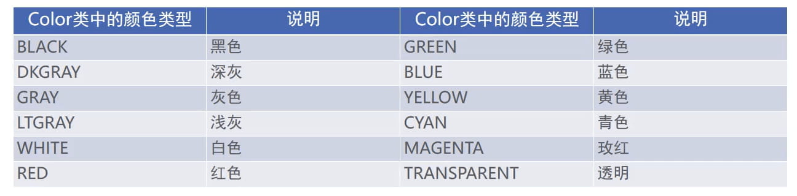
2.视图
2.1设置视图的宽高
-
视图宽度通过属性android:layout_width表达，视图高度通过属性android:layout_height表达，宽高的取值主要有下列三种:
-
match_parent：表示与上级视图保持一致。
-
wrap_content：表示与内容自适应。
-
以dp为单位的具体尺寸。
-
在代码中设置视图宽高
首先确保XML中的宽高属性值为wrap_content,接着打开该页面对应的Java代码,依序执行以下三个步骤：
- 调用控件对象的getLayoutParams方法，获取该控件的布局参数。
- 布局参数的width属性表示宽度, height属性表示高度,修改这两个属性值。
- 调用控件对象的setLayoutParams方法,填入修改后的布局参数使之生效。
2.2 设置视图的间距
设置视图的间距有两种方式：
- 采用layout_margin属性，它指定了当前视图与周围平级视图之间的距离。包括layout_margin、layout_marginLeft、 layout_marginTop、 layout_marginRight、 layout_marginBottom
- 采用padding属性，它指定了当前视图与内部下级视图之间的距离。包括padding、paddingLeft、 paddingTop、 paddingRight、 paddingBottom
2.3 设置视图的对齐方式
设置视图的对齐方式有两种途径：
- 采用layout_gravity属性，它指定了当前视图相对于上级视图的对齐方式。
- 采用gravity属性，它指定了下级视图相对于当前视图的对齐方式。
layout_gravity与gravity的取值包括: left、top、right、bottom,还可以用竖线连接各取值，例如"left|top"表示即靠左又靠上,也就是朝左上角对齐。
2.4 滚动视图ScrollView
滚动视图有两种:
- ScrollView：它是垂直方向的滚动视图;垂直方向滚动时, layout_width属性值设置为match_parent, layout_height属性值设置为wrap_content。
- HorizontalScrollView：它是水平方向的滚动视图；水平方向滚动时， layout_width属性值设置为wrap_content, layout_height属性值设置为match_parent。
3.布局
3.1 线性布局LinearLayout
线性布局内部的各视图有两种排列方式：
- orientation属性值为horizontal时，内部视图在水平方向从左往右排列。
- orientation属性值为vertical时，内部视图在垂直方向从上往下排列。
如果不指定orientation属性，则LinearLayout默认水平方向排列。
3。2 线性布局的权重
线性布局的权重概念，指的是线性布局的下级视图各自拥有多大比例的宽高。
权重属性名叫layout_weight，但该属性不在LinearLayout节点设置,而在线性布局的直接下级视图设置，表示该下级视图占据的宽高比例。
- layout_width填Odp时，layout_weight表示水平方向的宽度比例。
- layout_height填Odp时，layout_weight表示垂直方向的高度比例。
3.3 相对布局RelativeLayout
相对布局的下级视图位置由其他视图决定。用于确定下级视图位置的参照物分两种：
- 与该视图自身平级的视图；
- 该视图的上级视图(也就是它归属的RelativeLayout)
如果不设定下级视图的参照物，那么下级视图默认显示在RelativeLayout内部的左上角。
3.4 相对位置的取值

3.5 网格布局GridLayout
网格布局支持多行多列的表格排列。
网格布局默认从左往右、从上到下排列，它新增了两个属性：
- columnCount属性，它指定了网格的列数，即每行能放多少个视图；
- rowCount属性，它指定了网格的行数，即每列能放多少个视图；
4.按钮
按钮控件Button由TextView派生而来，它们之间的区别有：
- Button拥有默认的按钮背景，而TextView默认无背景；
- Button的内部文本默认居中对齐,而TextView的内部文本默认靠左对齐;
- Button会默认将英文字母转为大写,而TextView保持原始的英文大小写;
与TextView相比, Button增加了两个新属性:
- textAllCaps属性，它指定了是否将英文字母转为大写，为true是表示自动转为大写，为false表示不做大写转换。
- onClick属性，它用来接管用户的点击动作，指定了点击按钮时要触发哪个方法;
4.1 点击事件和长按事件
监听器,意思是专门监听控件的动作行为。只有控件发生了指定的动作,监听器才会触发开关去执行对应的代码逻辑。
按钮控件有两种常用的监听器：
- 点击监听器，通过setOnClickListener方法设置。按钮被按住少于500毫秒时，会触发点击事件。
- 长按监听器,通过setOnLongClickListener方法设置。按钮被按住超过500毫秒时,会触发长按事件。
4.2 禁用与恢复按钮
在实际业务中，按钮通常拥有两种状态，即不可用状态与可用状态，它们在外观和功能上的区别如下:
- 不可用按钮：按钮不允许点击，即使点击也没反应，同时按钮文字为灰色；
- 可用按钮：按钮允许点击，点击按钮会触发点击事件，同时按钮文字为正常的黑色；
是否允许点击由enabled属性控制，属性值为true时表示允许点击，为false时表示不允许点击。
4.3 图像视图ImageView
图像视图展示的图片通常位于res/drawable***目录,设置图像视图的显示图片有两种方式：
- 在XML文件中，通过属性android:src设置图片资源，属性值格式形如“@drawable/不含扩展名的图片名称”。
- 在Java代码中,调用setlmageResource方法设置图片资源,方法参数格式形如"R.drawable.不含扩展名的图片名称”。
图像视图的缩放类型 ImageView本身默认图片居中显示,若要改变图片的显示方式,可通过scaleType属性设定，该属性的取值说明如下：
4.4 图像按钮ImageButton
ImageButton是显示图片的图像按钮,但它继承自ImageView,而非继承Button。
ImageButton和Button之间的区别有：
- Button既可显示文本也可显示图片，ImageButton只能显示图片不能显示文本。
- ImageButton上的图像可按比例缩放，而Button通过背景设置的图像会拉伸变形。
- Button只能靠背景显示一张图片,而ImageButton可分别在前景和背景显示图片,从而实现两
- 张图片叠加的效果。
ImageButton的使用场合
在某些场合，有的字符无法由输入法打出来，或者某些文字以特殊字体展示，就适合先切图再放到ImageButton。例如:开平方符号sqrt等等。
ImageButton与ImageView之间的区别有：
- ImageButton有默认的按钮背景， ImageView默认无背景。
- ImageButton默认的缩放类型为center,而ImageView默认的缩放类型为fitCenter。
4.5 同时展示文本与图像
同时展示文本与图像的可能途径包括：
(1)利用LinearLayout对ImageView和TextView组合布局。
(2)通过按钮控件Button的drawable***属性设置文本周围的图标。
- drawableTop：指定文字上方的图片。
- drawableBottom：指定文字下方的图片。
- drawableLeft：指定文字左边的图片。
- drawableRight：指定文字右边的图片。
- drawablePadding：指定图片与文字的间距。
二、Activity
1.Activity 的启动和结束
从当前页面跳到新页面，跳转代码如下：
- startActivity(new Intent(源页面.this,目标页面.class));
从当前页面回到上一个页面,相当于关闭当前页面,返回代码如下:
- finish(); //结束当前的活动页面
2.Activity的生命周期
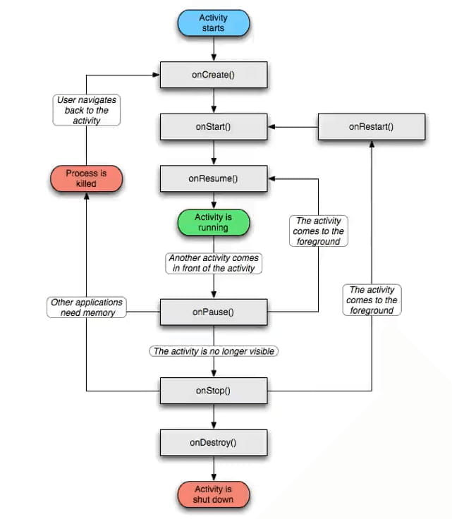
onCreate:创建活动。把页面布局加载进内存,进入了初始状态。 onStart:开始活动。把活动页面显示在屏幕上,进入了就绪状态。 onResume：恢复活动。活动页面进入活跃状态，能够与用户正常交互，例如允许响应用户的点击动作、允许用户输入文字等等。 onPause：暂停活动。页面进入暂停状态，无法与用户正常交互。 onStop：停止活动。页面将不在屏幕上显示。 onDestroy:销毁活动。回收活动占用的系统资源,把页面从内存中清除。活 onRestart:重启活动。重新加载内存中的页面数据。 onNewlntent:重用已有的活动实例。
如果一个Activity已经启动过，并且存在当前应用的Activity任务栈中，启动模式为singleTask, singlelnstance或singleTop(此时已 在任务栈顶端)，那么在此启动或回到这个Activity的时候,不会创建新的实例，也就是不会执行onCreate方法,而是执行 onNewIntent方法。
2.1 各状态之间的切换过程
打开新页面的方法调用顺序为： onCreate->onStart->onResume 关闭旧页面的方法调用顺序为： onPause->onStop->onDestroy
3.Activity 的启动模式

3.1 在配置文件中指定启动模式
打开AndroidManifest.xml，给activity节点添加属性android:launchMode，属性值填入standard表示采取标准模式，当然不添加属性的 话默认就是标准模式。具体的activity节点配置内容示例如下：
<activity android:name=".JumpFirstActivity" android:launchMode="standard">
launchMode属性的取值说明见下表。
| launchMode属性值 | 说明 |
|---|---|
| standard | 标准模式,无论何时启动哪个活动,都是重新创建该页面的实例并放入栈顶。如果不指定launchMode属性，则默认为标准模式 |
| singleTop | 启动新活动时,判断如果栈顶正好就是该活动的实例,则重用该实例；否则创建新的实例并放入栈顶，也就是按照standard模式处理 |
| singleTask | 启动新活动时,判断如果栈中存在该活动的实例,则重用该实例,并清除位于该实例上面的所有实例;否则按照standard模式处理 |
| singleInstance | 启动新活动时,将该活动的实例放入一个新栈中，原栈的实例列表保持不变 |
3.2 默认启动模式standard
该模式可以被设定,不在manifest设定时候, Activity的默认模式就是standard。在该模式下,启动的Activity会依照启动顺序被依次压入Task栈中:
3.3 栈顶复用模式singleTop
在该模式下,如果栈顶Activity为我们要新建的Activity (目标Activity) ,那么就不会重复创建新的Activity。

应用场景 适合开启渠道多、多应用开启调用的 Activity,通过这种设置可以避免已经创建过的Activity 被重复创建，多数通过动态设置使用。
3.4 栈内复用模式singleTask
与 singleTop 模式相似,只不过 singleTop 模式是只是针对栈顶的元素,而 singleTask 模式下,如果 task 栈内存在目标 Activity 实例, 则将 task 内的对应 Activity实例之上的所有 Activity弹出栈,并将对应 Activity 置于栈顶,获得焦点。
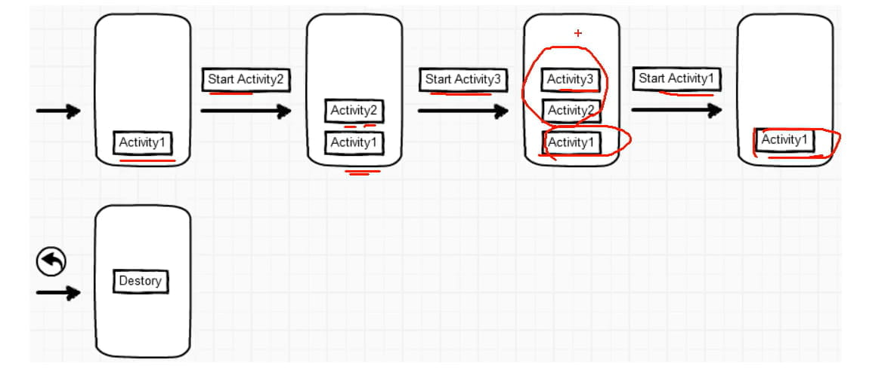
应用场景 程序主界面:我们肯定不希望主界面被创建多次,而且在主界面退出的时候退出整个App是最好的效果。 耗费系统资源的Activity:对于那些及其耗费系统资源的Activity,我们可以考虑将其设为singleTask模式,减少资源耗费。
3.5 全局唯一模式singlelnstance
在该模式下,我们会为目标Activity创建一个新的Task栈,将目标Activity放入新的Task,并让目标Activity获得焦点。新的Task有且只有这一个 Activity 实例。 如果已经创建过目标 Activity 实例,则不会创建新的 Task,而是将以前创建过的 Activity 唤醒。

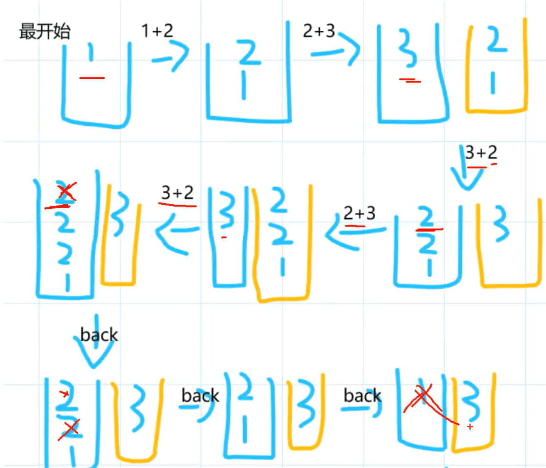

3.6 动态设置启动模式
在代码里面设置启动标志
启动标志的取值说明如下：
- Intent.FLAG_ACTIVITY_NEW_TASK:开辟一个新的任务栈
- Intent.FLAG_ACTIVITY_SINGLE_TOP:当栈顶为待跳转的活动实例之时,则重用栈顶的实例
- Intent.FLAG_ACTIVITY_CLEAR_TOP:当栈中存在待跳转的活动实例时,则重新创建一个新实例,并清除原实例上方的所有实例
- Intent.FLAG_ACTIVITY_NO_HISTORY:栈中不保存新启动的活动实例
- Intent.FLAG_ACTIVITY_CLEAR_TASK:跳转到新页面时,栈中的原有实例都被清空
3.6.1 解决重复返回的问题
在代码中设置规则
@Override
public void onClick(View v) {
// 创建一个意图对象，准备跳到指定的活动页面
Intent intent = new Intent(this, JumpSecondActivity.class);
// 栈中存在待跳转的活动实例时，则重新创建该活动的实例，并清除原实例上方的所有实例
intent.setFlags(Intent.FLAG_ACTIVITY_CLEAR_TOP);
startActivity(intent);
}
3.6.2 登录成功之后不再返回登录页面
@Override
public void onClick(View v) {
// 创建一个意图对象，准备跳到指定的活动页面
Intent intent = new Intent(this, LoginSuccessActivity.class);
// 设置启动标志：跳转到新页面时,栈中的原有实例都被清空,同时开辟新任务的活动栈
intent.setFlags(Intent.FLAG_ACTIVITY_CLEAR_TASK | Intent.FLAG_ACTIVITY_NEW_TASK);
startActivity(intent);
}
3.7 显式Intent和隐式Intent
Intent是各个组件之间信息沟通的桥梁,它用于Android各组件之间的通信,主要完成下列工作：
- 标明本次通信请求从哪里来、到哪里去、要怎么走。
- 发起方携带本次通信需要的数据内容，接收方从收到的意图中解析数据。
- 发起方若想判断接收方的处理结果，意图就要负责让接收方传回应答的数据内容。
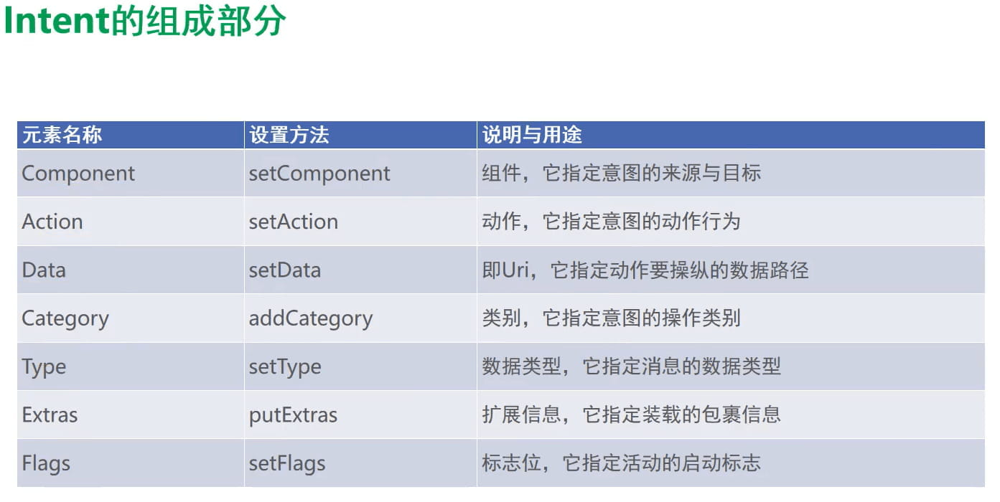
3.7.1 显示Intent
显式Intent，直接指定来源活动与目标活动,属于精确匹配。它有三种构建方式：
- 在Intent的构造函数中指定。
- 调用意图对象的setClass方法指定。
- 调用意图对象的setComponent方法指定。
@Override
public void onClick(View v) {
// 1.在Intent的构造函数中指定
Intent intent = new Intent(this, ActFinishActivity.class);
// 2.调用意图对象的setClass方法指定
// intent.setClass(this, ActFinishActivity.class);
// 3.调用意图对象的setComponent方法指定
ComponentName component = new ComponentName(this, ActFinishActivity.class);
intent.setComponent(component);
startActivity(intent);
}
3.7.2 隐式Intent
没有明确指定要跳转的目标活动，只给出一个动作字符串让系统自动匹配，属于模糊匹配
通常App不希望向外部暴露活动名称，只给出一个事先定义好的标记串，这样大家约定俗成、按图索骥就好，隐式Intent便起到了标记过滤作用。这个动作名称标记串，可以是自己定义的动作，也可以是已有的系统动作.
@Override
public void onClick(View v) {
String phone = "123456";
Intent intent = new Intent();
switch (v.getId()) {
case R.id.btn_dial:
// 设置意图动作为准备拨号
intent.setAction(Intent.ACTION_DIAL);
// 声明一个拨号的Uri
Uri uri = Uri.parse("tel:" + phone);
intent.setData(uri);
break;
case R.id.btn_sms:
intent.setAction(Intent.ACTION_SENDTO);
Uri uri2 = Uri.parse("smsto:" + phone);
intent.setData(uri2);
break;
case R.id.btn_my:
intent.setAction("android.intent.action.NING");
intent.addCategory(Intent.CATEGORY_DEFAULT);
break;
}
startActivity(intent);
}
想要跳转到自己定义的不同模块的Activity
- 在目标的 AndroidManifest.xml 中添加
<activity
android:name=".CalculatorActivity"
android:exported="true"> <!--必须设置为true-->
<intent-filter>
<action android:name="android.intent.action.MAIN" />
<category android:name="android.intent.category.LAUNCHER" />
</intent-filter>
<!--自行添加-->
<intent-filter>
<action android:name="android.intent.action.NING" />
<category android:name="android.intent.category.DEFAULT" />
</intent-filter>
</activity>
- 在java代码中设置action与category
//与上面自行添加的一样
intent.setAction("android.intent.action.NING");
intent.addCategory(Intent.CATEGORY_DEFAULT);
3.8 向下一个Activity发送数据
Intent使用Bundle对象存放待传递的数据信息。 Bundle对象操作各类型数据的读写方法说明见下表。
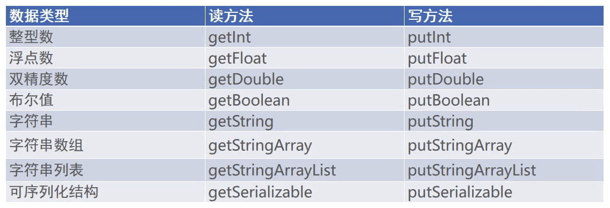
//发送放
@Override
public void onClick(View v) {
Intent intent = new Intent(this, ActReceiveActivity.class);
// 创建一个新包裹
Bundle bundle = new Bundle();
bundle.putString("request_time", DateUtil.getNowTime());
bundle.putString("request_content", tv.getText().toString());
intent.putExtras(bundle);
// intent.putExtra("request_time", DateUtil.getNowTime());
// intent.putExtra("request_content", tv.getText().toString());
startActivity(intent);
}
//接收方
@Override
protected void onCreate(Bundle savedInstanceState) {
super.onCreate(savedInstanceState);
setContentView(R.layout.activity_act_receive);
TextView tv = (TextView) findViewById(R.id.tv_receive);
// 从上一个页面传来的意图中获取快递包裹
Bundle bundle = getIntent().getExtras();
String requestTime = bundle.getString("request_time");
String requestContent = bundle.getString("request_content");
String desc = String.format("收到请求消息: \n请求时间为%s\n请求内容为%s", requestTime, requestContent);
tv.setText(desc);
}
3.9 向上一个Activity返回数据
处理下一个页面的应答数据，详细步骤说明如下(已过时)：
- 上一个页面打包好请求数据,调用startActivityForResult方法执行跳转动作
- 下一个页面接收并解析请求数据,进行相应处理
- 下一个页面在返回上一个页面时，打包应答数据并调用setResult方法返回数据包裹
- 上一个页面重写方法onActivityResult,解析获得下一个页面的返回数据
新版处理方式：
//发送方
//调用新方法处理
ActivityResultLauncher<Intent> register = egisterForActivityResult(new ActivityResultContracts.StartActivityForResult(), result -> {
});
@Override
public void onClick(View v) {
Intent intent = new Intent(this, ActResponseActivity.class);
intent.putExtra("request_time", DateUtil.getNowTime());
intent.putExtra("request_content", mRequest);
register.launch(intent);
}
// 接收方照常接收
// 从上一个页面传来的意图中获取快递包裹
Bundle bundle = getIntent().getExtras();
String requestTime = bundle.getString("request_time");
String requestContent = bundle.getString("request_content");
String desc = String.format("收到请求消息: \n请求时间为%s\n请求内容为%s", requestTime, requestContent);
tvRequest.setText(desc);
// 但发送时有所不同
@Override
public void onClick(View v) {
Intent intent = new Intent();
intent.putExtra("response_time", DateUtil.getNowTime());
intent.putExtra("response_content", mResponse);
// 携带意图返回上一个页面。RESULT_OK表示处理成功
setResult(Activity.RESULT_OK, intent);
// 结束当前页面
finish();
}
//发送方再接收接收方传来的数据
register = registerForActivityResult(new ActivityResultContracts.StartActivityForResult(), result -> {
// 收到上一个Activity传给当前Activity的结果
if (result != null) {
Intent intent = result.getData(); // 注意这里的intent是从result中拿取
if (intent != null && result.getResultCode() == Activity.RESULT_OK) {
Bundle bundle = intent.getExtras();
String responseTime = bundle.getString("response_time");
String responseContent = bundle.getString("response_content");
String desc = String.format("收到返回消息: \n应答时间为%s\n应答内容为%s", responseTime, responseContent);
tvResponse.setText(desc);
}
}
});
3.10 在代码中读取资源配置文件的内容
@Override
protected void onCreate(Bundle savedInstanceState) {
super.onCreate(savedInstanceState);
setContentView(R.layout.activity_read_string);
tvResource = (TextView) findViewById(R.id.tv_resource);
// 从strings.xml获取名叫weather_str的字符串值
String value = getString(R.string.weather_str); // getString是Context类中的方法，而Activity是继承与Context的，所以直接调用
tvResource.setText(value);
}
3.11 在代码中获取元数据(AndroidManifest.xml中的)
在Java代码中，获取元数据信息的步骤分为下列三步：
- 调用getPackageManager方法获得当前应用的包管理器;
- 调用包管理器的getActivitylnfo方法获得当前活动的信息对象;
- 活动信息对象的metaData是Bundle包裹类型，调用包裹对象的getString即可获得指定名称的参数值；
在AndroidManifest.xml中添加
<activity
android:name=".MetaDataActivity"
android:exported="true">
<intent-filter>
<action android:name="android.intent.action.MAIN" />
<category android:name="android.intent.category.LAUNCHER" />
</intent-filter>
<!--value也可以引用strings.xml中的-->
<meta-data android:name="weather" android:value="晴天"/>
</activity>
@Override
protected void onCreate(Bundle savedInstanceState) {
super.onCreate(savedInstanceState);
setContentView(R.layout.activity_meta_data);
TextView tvMeta = findViewById(R.id.tv_meta);
// 获取包管理器
PackageManager packageManager = getPackageManager(); // Context中的
try {
// getComponentName()获取Activity的组件名称 android:name=".MetaDataActivity"
// 从应用包管理器中获取当前的活动信息
ActivityInfo info = packageManager.getActivityInfo(getComponentName(), PackageManager.GET_META_DATA);
Bundle bundle = info.metaData;
String weather = bundle.getString("weather");
tvMeta.setText(weather);
} catch (PackageManager.NameNotFoundException e) {
throw new RuntimeException(e);
}
}
3.12 给应用页面注册快捷方式

- 定义一个value的xml文件，并用shortcut标签，将要显示的内容放在里面(注意：ShortLabel、LongLabel必须是在strings.xml中的)
<?xml version="1.0" encoding="utf-8"?>
<shortcuts xmlns:android="http://schemas.android.com/apk/res/android">
<shortcut
android:shortcutId="first"
android:enabled="true"
android:icon="@mipmap/ic_launcher"
android:shortcutShortLabel="@string/first_short"
android:shortcutLongLabel="@string/first_long">
<intent
android:action="android.intent.action.VIEW"
android:targetPackage="com.example.chapter04"
android:targetClass="com.example.chapter04.ActStartActivity" />
<categories android:name="android.shortcut.conversation" />
</shortcut>
<shortcut
android:enabled="true"
android:icon="@mipmap/ic_launcher"
android:shortcutId="second"
android:shortcutLongLabel="@string/second_long"
android:shortcutShortLabel="@string/second_short">
<intent
android:action="android.intent.action.VIEW"
android:targetPackage="com.example.chapter04"
android:targetClass="com.example.chapter04.JumpFirstActivity" />
<categories android:name="android.shortcut.conversation" />
<categories android:name="android.shortcut.conversation" />
</shortcut>
<shortcut
android:enabled="true"
android:icon="@mipmap/ic_launcher"
android:shortcutId="third"
android:shortcutLongLabel="@string/third_long"
android:shortcutShortLabel="@string/third_short">
<intent
android:action="android.intent.action.VIEW"
android:targetPackage="com.example.chapter04"
android:targetClass="com.example.chapter04.LoginInputActivity" />
<categories android:name="android.shortcut.conversation" />
<categories android:name="android.shortcut.conversation" />
</shortcut>
</shortcuts>
- 在AndroidManifest.xml写入对应的Activity，并且设置exported="true"
<activity
android:name=".JumpFirstActivity"
android:exported="true" />
<activity
android:name=".LoginInputActivity"
android:exported="true" />
<activity
android:name=".ActStartActivity"
android:exported="true">
<intent-filter>
<action android:name="android.intent.action.MAIN" />
<category android:name="android.intent.category.LAUNCHER" />
</intent-filter>
<!--设置使用shortcuts-->
<meta-data
android:name="android.app.shortcuts"
android:resource="@xml/shortcuts" />
</activity>
三、中级控件
1.图形定制
1.1 图形Drawable
- Drawable类型表达了各种各样的图形，包括图片、色块、画板、背景等。
- 包含图片在内的图形文件放在res目录的各个drawable目录下，其中drawable目录一般保存描述性的XML文件,而图片文件一般放在具体分辨率的drawable目录下。
- drawable-ldpi里面存放低分辨率的图片(如240×320) ,现在基本没有这样的智能手机了。
- drawable-mdpi里面存放中等分辨率的图片(如320×480) ,这样的智能手机已经很少了。
- drawable-hdpi里面存放高分辨率的图片（如480×800) ，一般对应4英寸~4.5英寸的手机(但不绝对，同尺寸的手机有可能分辨率 不同，手机分辨率就高不就低，因为分辨率低了屏幕会有模糊的感觉）。
- drawable-xhdpi里面存放加高分辨率的图片（如720×1280），一般对应5英寸~5.5英寸的手机。
- drawable-xxhdpi里面存放超高分辨率的图片（如1080×1920），一般对应6英寸~6.5英寸的手机。
- drawable-xxxhdpi里面存放超超高分辨率的图片（如1440×2560），一般对应7英寸以上的平板电脑。
- 各视图的background属性、ImageView和ImageButton的src属性、TextView和Button四个方向的drawable***系列属性都可以引用图形文件。
步骤：
- 在res/drawable目录下新建一个Drawable Resource File并设置Root element:
shape - 可以在xml中直接设置
android:background="@drawable/xxx" - 可以在java代码中设置
findViewById(R.id.v_content).setBackgroundResource(R.drawable.xxx);
1.1.1 形状图形
Shape图形又称形状图形，它用来描述常见的几何形状，包括矩形、圆角矩形、圆形、椭圆等等。
形状图形的定义文件是以shape标签为根节点的XML描述文件，它支持四种类型的形状：
- rectangle：矩形。默认值
- oval：椭圆。此时corners节点会失效
- line：直线。此时必须设置stroke节点，不然会报错
- ring：圆环
形状图形的定义文件放在drawable目录下,它是以shape标签为根节点的XML描述文件。根节点下定义了6个节点,分别是: size(尺寸)、stroke (描边) 、corners (圆角) 、solid (填充) 、padding (间隔) 、gradient (渐变) ,各节点的属性值主要是长宽、半径、角度以及颜色等
- shape(形状)
shape是形状图形文件的根节点,它描述了当前是哪种几何图形。下面是shape节点的常用属性说明。 shape：字符串类型，表示图形的形状。形状类型的取值说明见下表。
| 形状类型 | 说明 |
|---|---|
| rectangle | 矩形。默认 |
| oval | 椭圆。此时corners节点会失效 |
| line | 直线。此时必须设置stroke节点，不然会报错 |
| ring | 圆环 |
- size (尺寸)
size是shape的下级节点，它描述了形状图形的宽高尺寸。若无size节点，则表示宽高与宿主视图一样大小。下面是size节点的常用属性说明。
- height： 像素类型，图形高度。
-
width：像素类型，图形宽度。
-
stroke (描边)
stroke是shape的下级节点，它描述了形状图形的描边规格。若无stroke节点，则表示不存在描边。下面是stroke节点的常用属性说明。
- color:颜色类型，描边的颜色。
- dashGap：像素类型，每段虚线之间的间隔。
- dashWidth:像素类型，每段虚线的宽度。若dashGap和dashWidth有一个值为0，则描边为实线。
-
width：像素类型，描边的厚度。
-
corners（圆角）
corners是shape的下级节点,它描述了形状图形的圆角大小。若无corners节点，则表示没有圆角。下面是corners节点的常用属性说明。
- bottomLeftRadius：像素类型，左下圆角的半径。
- bottomRightRadius:像素类型,右下圆角的半径。
- topLeftRadius：像素类型，左上圆角的半径。
- topRightRadius:像素类型,右上圆角的半径。
-
radius：像素类型，4个圆角的半径（若有上面4个圆角半径的定义，则不需要radius定义）。
-
solid (填充)
solid是shape的下级节点,它描述了形状图形的填充色彩。若无solid节点,则表示无填充颜色。下面是solid节点的常用属性说明。
-
color：颜色类型，内部填充的颜色。
-
padding （间隔）
padding是shape的下级节点，它描述了形状图形与周围边界的间隔。若无padding节点，则表示四周不设间隔。下面是padding节点的常用属性说明。
- top：像素类型，与上方的间隔。
- bottom：像素类型，与下方的间隔。
- left：像素类型，与左边的间隔。
-
right：像素类型，与右边的间隔。
-
gradient (渐变)
gradient是shape的下级节点,它描述了形状图形的颜色渐变。若无gradient节点,则表示没有渐变效果。下面是gradient节点的常用属性说明。
- angle:整型,渐变的起始角度。为0时 表示时钟的9点位置,值增大表示往逆时针方向旋转。例如,值为90表示6点位置,值为180表示3点位置，值为270表示0点/12点位置。
- type：字符串类型，渐变类型。渐变类型的取值说明见下表。
| 渐变类型 | 说明 |
|---|---|
| linear | 线性渐变，默认 |
| radial | 放射渐变，起始颜色就是圆心颜色 |
| sweep | 滚动渐变，即一个线段以某个端点为圆心做360度旋转 |
- centerX：浮点型，圆心的X坐标。当android:type="linear"时不可用。
- centerY：浮点型，圆心的Y坐标。当android:type="linear"时不可用。
- gradientRadius：整型，渐变的半径。当android:type="radial"时需要设置该属性。
- centerColor：颜色类型，渐变的中间颜色。
- startColor:颜色类型，渐变的起始颜色。
- endColor：颜色类型，渐变的终止颜色。
- useLevel：布尔类型，设置为true为无渐变色、false为有渐变色。
在实际开发中，形状图形主要使用3个节点： stroke （描边） 、corners （圆角）和solid （填充） 。至于shape根节点的属性一般不用设置（默认矩形即可）。
1.2 九宫格图片
将某张图片设置成视图背景时，如果图片尺寸太小，则系统会自动拉伸图片使之填满背景。可是一旦图片拉得过大，其画面容易变得模糊。
可以使用Vector Assest创建一个VectorDrawable，下载一个SVG格式的图片，并将其转换为XML格式
转换工具：Android SVG to VectorDrawable (zhangningning.com.cn)
<?xml version="1.0" encoding="utf-8"?>
<vector xmlns:android="http://schemas.android.com/apk/res/android"
android:width="17dp"
android:height="17dp"
android:viewportWidth="1024"
android:viewportHeight="1024">
<path
android:fillColor="#FFFFFF"
android:pathData="M0 0h1024v1024H0z" />
<path
android:fillColor="#111111"
android:pathData="M725.333333 110.506667a32 32 0 0 1 27.712 16l213.333334 369.493333a32 32 0 0 1 0
32l-213.333334 369.493333a32 32 0 0 1-27.712 16H298.666667a32 32 0 0
1-27.712-16l-213.333334-369.493333a32 32 0 0 1 0-32l213.333334-369.493333A32 32
0 0 1 298.666667 110.506667z m-339.648 195.946666l89.856 89.898667-79.189333
79.189333-89.877333-89.877333c-23.104 54.293333-12.608 119.381333 31.530666
163.52 44.138667 44.16 109.226667 54.634667 163.52 31.552l97.216 97.194667a56 56
0 1 0 79.189334-79.189334l-97.194667-97.237333c23.082667-54.293333
12.586667-119.36-31.552-163.498667-44.117333-44.138667-109.205333-54.613333-163.498667-31.552z" />
</vector>
1.3 状态列表图形
Button按钮的背景在正常情况下是凸起的,在按下时是凹陷的,从按下到弹起的过程,用户便能知道点击了这个按钮。
状态类型的取值说明
状态列表图形不仅用于按钮控件，还可用于其他拥有多种状态的控件。
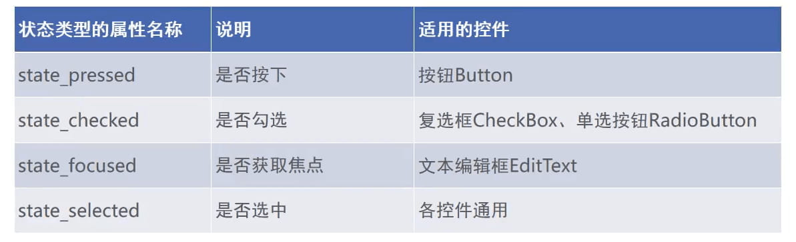
2.选择按钮
2.1 复选框CheckBox
- CompoundButton类是抽象的复合按钮,由它派生而来的子类包括:复选框CheckBox、单选按钮RadioButton以及开关按钮Switch。
- 下图描述了复合按钮的继承关系：

CompoundButton在XML文件中主要使用下面两个属性。
- checked:指定按钮的勾选状态，true表示勾选，false则表示未勾选。默认为未勾选。
- button:指定左侧勾选图标的图形资源,如果不指定就使用系统的默认图标。CompoundButton在Java代码中主要使用下列4种方法。
- setChecked:设置按钮的勾选状态。
- setButtonDrawable:设置左侧勾选图标的图形资源。
- setOnCheckedChangeListener:设置勾选状态变化的监听器。
- isChecked:判断按钮是否勾选。
设置监听：
CheckBox ck_system = findViewById(R.id.ck_system);
CheckBox ck_custom = findViewById(R.id.ck_custom);
ck_system.setOnCheckedChangeListener(this);
ck_custom.setOnCheckedChangeListener(this);
@Override
public void onCheckedChanged(CompoundButton buttonView, boolean isChecked) {
String desc = String.format("您%s了这个CheckBox", isChecked ? "勾选" : "取消勾选");
buttonView.setText(desc);
}
2.2 开关按钮Switch(一般用CheckBox比较多)
Switch是开关按钮,它在选中与取消选中时可展现的界面元素比复选框丰富。
Switch 控件新添加的XML属性说明如下：
- textOn：设置右侧开启时的文本。
- textOff:设置左侧关闭时的文本。
- track：设置开关轨道的背景。
- thumb：设置开关标识的图标。
2.3 单选按钮RadioButton
单选按钮要在一组按钮中选择其中一项，并且不能多选，这要求有个容器确定这组按钮的范围，这个容器便是单选组RadioGroup。
RadioGroup实质上是个布局,同一组RadioButton都要放在同一个RadioGroup节点下。除了RadioButton,也允许放置其他控件。
RadioGroup下面除了RadioButton,还可以挂载其他子控件(如TextView, ImageView等)。如此看来,单选组相当于特殊的线性布局，它们主要有以下两个区别：
- 单选组多了管理单选按钮的功能，而线性布局不具备该功能。
- 如果不指定orientation属性，那么单选组默认垂直排列，而线性布局默认水平排列。
下面是RadioGroup在Java代码中的3个常用方法。
- check:选中指定资源编号的单选按钮。
- getCheckedRadioButtonld：获取已选中单选按钮的资源编号。
- setOnCheckedChangeListener：设置单选按钮勾选变化的监听器。
3.文本输入
3.1 编辑框EditText
编辑框EditText用于接收软键盘输入的文字，例如用户名、密码、评价内容等，它由文本视图派生而来，除了TextView已有的各种属性和
方法，EditText还支持下列XML属性。
- inputType:指定输入的文本类型。输入类型的取值说明见表5-4,若同时使用多种文本类型,则可使用竖线"1"把多种文本类型拼接起来。
- maxLength:指定文本允许输入的最大长度。
- hint：指定提示文本的内容。
- textColorHint:指定提示文本的颜色。
android:inputType=""能输入的文本有
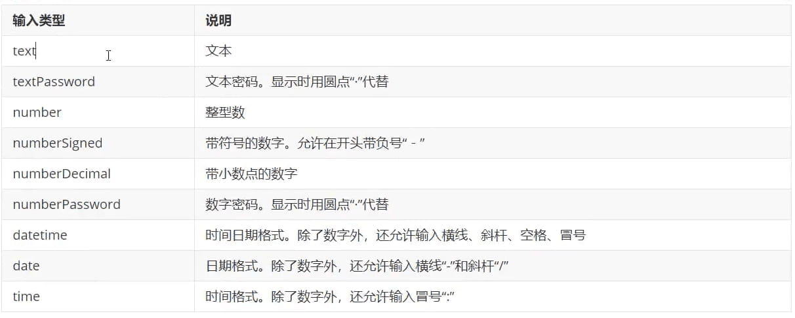
3.2 焦点变更监听器
编辑框点击两次后才会触发点击事件，因为第一次点击只触发焦点变更事件，第二次点击才触发点击事件。
若要判断是否切换编辑框输入，应当监听焦点变更事件，而非监听点击事件。
调用编辑框对象的setOnFocusChangeListener方法，即可在光标切换之时（获得光标和失去光标)触发焦点变更事件。
3.3 文本变化监听器
判断手机号输入满11位后自动关闭软键盘,或者密码输入满6位后自动关闭软键盘，此时要注册文本变化监听器。
达到指定位数便自动关闭键盘的功能，可以再分解为两个独立的功能点
- 如何关闭软键盘；
- 如何判断已输入的文字达到指定位数；
3.3.1 文本变化监听器的用法
调用编辑框对象的addTextChangedListener方法即可注册文本监听器。
文本监听器的接口名称为TextWatcher,该接口提供了3个监控方法,具体说明如下。
- beforeTextChanged:在文本改变之前触发。
- onTextChanged：在文本改变过程中触发。
- afterTextChanged：在文本改变之后触发。
4.对话框
4.1 提醒对话框AlertDialog
AlertDialog可以完成常见的交互操作,例如提示、确认、选择等功能。AlertDialog借助建造器AlertDialog.Builder才能完成参数设置。
调用建造器的 create 方法生成对话框实例，再调用对话框实例的show方法，在页面上弹出提醒对话框。
- setlcon：设置对话框的标题图标。
- setTitle:设置对话框的标题文本。
- setMessage:设置对话框的内容文本。
- setPositiveButton:设置肯定按钮的信息,包括按钮文本和点击监听器。
- setNegativeButton:设置否定按钮的信息,包括按钮文本和点击监听器。
- setNeutralButton:设置中性按钮的信息,包括按钮文本和点击监听器,该方法比较少用。
@Override
public void onClick(View v) {
// 创建提醒对话框的建造器
AlertDialog.Builder builder = new AlertDialog.Builder(this);
// 设置对话框的标题文本
builder.setTitle("尊敬的用户");
// 设置对话框的内容文本
builder.setMessage("你真的要卸载我吗？ ");
// 设置对话框的肯定按钮文本及其点击监听器
builder.setPositiveButton("残忍卸载", (dialog, which) -> {
tv_alert.setText("虽然依依不舍,但是只能离开了");
});
// 设置对话框的否定按钮文本及其点击监听器
builder.setNegativeButton("我再想想", (dialog, which) -> {
tv_alert.setText("让我再陪你三百六十五个日夜");
});
// 根据建造器构建提醒对话框对象
AlertDialog dialog = builder.create();
dialog.show();
}
4.2 日期对话框DatePickerDialog
日期选择器DatePicker可以让用户选择具体的年月日。
但 DatePicker 并非弹窗模式，而是在当前页面占据一块区域，并且不会自动关闭。
DatePickerDialog相当于在AlertDialog上装载了DatePicker, 日期选择事件则由监听器OnDateSetListener负责响应,在该监听器的onDateSet方法中,开发者获取用户选择的具体日期，再做后续处理。
package com.example.chapter05;
import android.app.DatePickerDialog;
import android.os.Bundle;
import android.view.View;
import android.widget.DatePicker;
import android.widget.TextView;
import androidx.appcompat.app.AppCompatActivity;
import java.util.Calendar;
public class DatePickerActivity extends AppCompatActivity implements View.OnClickListener, DatePickerDialog.OnDateSetListener {
private DatePicker datePicker;
private TextView tv_date;
@Override
protected void onCreate(Bundle savedInstanceState) {
super.onCreate(savedInstanceState);
setContentView(R.layout.activity_date_picker);
findViewById(R.id.btn_ok).setOnClickListener(this);
findViewById(R.id.btn_date).setOnClickListener(this);
datePicker = findViewById(R.id.dp_date);
tv_date = findViewById(R.id.tv_date);
}
@Override
public void onClick(View v) {
switch (v.getId()) {
case R.id.btn_ok:
String desc = String.format("您选择的日期是%d年%d月%d日", datePicker.getYear(), datePicker.getMonth() + 1, datePicker.getDayOfMonth());
tv_date.setText(desc);
break;
case R.id.btn_date:
Calendar calendar = Calendar.getInstance();
int year = calendar.get(Calendar.YEAR);
int month = calendar.get(Calendar.MONTH) + 1;
int day = calendar.get(Calendar.DAY_OF_MONTH);
DatePickerDialog datePickerDialog = new DatePickerDialog(this, this, year, month, day);
datePickerDialog.show();
break;
}
}
@Override
public void onDateSet(DatePicker view, int year, int month, int dayOfMonth) {
String desc = String.format("您选择的日期是%d年%d月%d日", year, month, dayOfMonth);
tv_date.setText(desc);
}
}
4.3 时间对话框TimePickerDialog
时间选择器TimePicker可以让用户选择具体的小时和分钟
TimePickerDialog的用法类似DatePickerDialog。
package com.example.chapter05;
import android.app.TimePickerDialog;
import android.os.Bundle;
import android.view.View;
import android.widget.TextView;
import android.widget.TimePicker;
import androidx.appcompat.app.AppCompatActivity;
import java.util.Calendar;
public class TimePickerActivity extends AppCompatActivity implements View.OnClickListener, TimePickerDialog.OnTimeSetListener {
private TimePicker tp_time;
private TextView tv_time;
@Override
protected void onCreate(Bundle savedInstanceState) {
super.onCreate(savedInstanceState);
setContentView(R.layout.activity_time_picker);
findViewById(R.id.btn_ok).setOnClickListener(this);
tp_time = findViewById(R.id.tp_time);
// 设置为24小时
tp_time.setIs24HourView(true);
tv_time = findViewById(R.id.tv_time);
findViewById(R.id.btn_time).setOnClickListener(this);
}
@Override
public void onClick(View v) {
switch (v.getId()) {
case R.id.btn_ok:
String desc = String.format("您选择的时间是%d时%d分", tp_time.getHour(), tp_time.getMinute());
tv_time.setText(desc);
break;
case R.id.btn_time:
Calendar calendar = Calendar.getInstance();
TimePickerDialog timePickerDialog = new TimePickerDialog(this,
android.R.style.Theme_Dialog, //设置时间选择器的样式
this,
Calendar.HOUR_OF_DAY,
Calendar.MINUTE,
true);
timePickerDialog.show();
break;
}
}
@Override
public void onTimeSet(TimePicker view, int hourOfDay, int minute) {
String desc = String.format("您选择的时间是%d时%d分", hourOfDay, minute);
tv_time.setText(desc);
}
}
四、数据存储
1.共享参数SharedPreferences
1.1 共享参数的用法
-
SharedPreferences 是Android的一个轻量级存储工具，采用的存储结构是Key-Value的键值对方式。
-
共享参数的存储介质是符合XML规范的配置文件。保存路径是: /data/data/应用包名/shared_prefs/文件名.xml
1.2 共享参数的使用场景
共享参数主要适用于如下场合：
- 简单且孤立的数据。若是复杂且相互间有关的数据,则要保存在数据库中。
- 文本形式的数据。若是二进制数据,则要保存在文件中。
- 需要持久化存储的数据。在App退出后再次启动时，之前保存的数据仍然有效。
实际开发中,共享参数经常存储的数据有App的个性化配置信息、用户使用App的行为信息、临时需要保存的片段信息等。
sharedPreferences对数据的存储和读取类似Map，提供put和set方法。
获取数据可以通过SharedPreferences对象获取：
//第一个参数表示文件名，第二个参数表示私有模式
SharedPreferences shared = getSharedPreferences("fileName", MODE_PRIVATE);
String name = shared.getString("name");
而存储数据则还需要借助Editor类：
SharedPreferences.Editor editor = shared.edit();
editor.putString("name", "oymn");
editor.putInt("age", 20);
editor.commit();
1.3 应用实例：记住密码功能
- 声明一个共享参数对象，并在onCreate中调用getSharedPreferences方法获取共享参数的实例。
- 登录成功时，如果用户勾选了“记住密码”，就使用共享参数保存手机号码与密码。
所以在登录页面的onCreat方法中添加获取共享参数的代码：
// 从share_login.xml获取共享参数对象
mShared = getSharedPreferences("share_login", MODE_PRIVATE);
// 获取共享参数保存的手机号码
String phone = mShared.getString("phone", "");
// 获取共享参数保存的密码
String password = mShared.getString("password", "");
et_phone.setText(phone); // 往手机号码编辑框填写上次保存的手机号
et_password.setText(password); // 往密码编辑框填写上次保存的密码
接着在登录成功方法中添加保存功能：
// 如果勾选了“记住密码”，就把手机号码和密码都保存到共享参数中
if (isRemember) {
SharedPreferences.Editor editor = mShared.edit(); // 获得编辑器的对象
editor.putString("phone", et_phone.getText().toString()); // 添加名叫phone的手机号码
editor.putString("password", et_password.getText().toString()); // 添加名叫password的密码
editor.commit(); // 提交编辑器中的修改
}
2.数据库SQLite
SQLite是安卓的一种小巧的嵌入式数据库，基本使用和思路和Mysql无异。
3.存储卡的文件操作
3.1 私有空间和公有空间
为了更规范地管理手机存储空间，Android从7.0开始将存储卡划分为私有存储和公共存储两大部分，也就是分区存储方式，系统给每个App都分配了默认的私有存储空间。App在私有空间上读写文件无须任何授权，但是若想在公共空间读写文件，则要在AndroidManifest.xml里面添加下述的权限配置。
<!-- 存储卡读写 -->
<uses-permission android:name="android.permission.WRITE_EXTERNAL_STORAGE"/>
<uses-permission android:name="android.permission.READ_EXTERNAL_STORAG"/>
但是即使App声明了完整的存储卡操作权限，系统仍然默认禁止该App访问公共空间。打开手机的系统设置界面，进入到具体应用的管理页面，会发现该应用的存储访问权限被禁止了。
既然存储卡分为公共空间和私有空间两部分，它们的空间路径获取也就有所不同。若想获取公共空间的存储路径，调用的是Environment.getExternalStoragePublicDirectory方法；若想获取应用私有空间的存储路径，调用的是getExternalFilesDir方法。
//获取系统的公共存储路径
String publicPath = Environment.getExternalStoragePublicDirectory(Environment.DIRECTORY_DOWNLOADS).toString();
//获取系统的私有存储路径
String privatePath = getExternalFilesDir(Environment.DIRECTORY_DOWNLOADS).toString();
boolean isLegacy = true;
if(Build.VERSION.SDK_INT >= Build.VERSION_CODES.Q){
//Android10的存储空间默认采用分区方式，这里是判断是使用传统方式还是分区方式
isLegacy = Environment.isExternalStorageLegacy();
3.2 在存储卡上读写文件
文本文件的读写借助IO流 FileOutputStream（写文件）和 FileInputStream（读文件）
// 把字符串保存到指定路径的文本文件
public static void saveText(String path, String txt) {
// 根据指定的文件路径构建文件输出流对象
try (FileOutputStream fos = new FileOutputStream(path)) {
fos.write(txt.getBytes()); // 把字符串写入文件输出流
} catch (Exception e) {
e.printStackTrace();
}
}
// 从指定路径的文本文件中读取内容字符串
public static String openText(String path) {
String readStr = "";
// 根据指定的文件路径构建文件输入流对象
try (FileInputStream fis = new FileInputStream(path)) {
byte[] b = new byte[fis.available()];
fis.read(b); // 从文件输入流读取字节数组
readStr = new String(b); // 把字节数组转换为字符串
} catch (Exception e) {
e.printStackTrace();
}
return readStr; // 返回文本文件中的文本字符串
}
3.3 在存储卡上读写 图片文件
文本文件可以转化为对字符串的读写，而图像的读写就需要借助专门的位图工具Bitmap处理。不同图像来源获取Bitmap的方式不同，有三种：
- 从指定资源文件中获取：decodeResource，例如从资源文件img.jpg获取位图对象：
Bitmap bitmap = BitmapFactory.decodeResource(getResources(), R.drawable.img);
- 从指定路径下获取：decodeFile，但是要注意从Android10开始，该方法只能获取私有空间下的图片，公共空间下获取不了。
Bitmap bitmap = BitmapFactory.decodeFile("C:\\Users\\OYMN\\Pictures\\onepunch.jpg");
- 从指定的输入流中获取，比如使用IO流打开图片文件，然后作为参数传入decodeStream：
public static Bitmap openImage(String path) {
Bitmap bitmap = null; // 声明一个位图对象
// 根据指定的文件路径构建文件输入流对象
try (FileInputStream fis = new FileInputStream(path)) {
bitmap = BitmapFactory.decodeStream(fis); // 从文件输入流中解码位图数据
} catch (Exception e) {
e.printStackTrace();
}
return bitmap; // 返回图片文件中的位图数据
}
获取到图片之后就可以通过ImageView的setImageBitmap进行设置了。
有多种读取图片的方式，但是写图片只有一种方式。通过Bitmap的compress方法将位图数据压缩到文件输出流：
public static void saveImage(String path, Bitmap bitmap){
//根据文件路径构建文件输出流
try(FileOutputStream fos = new FileOutputStream()){
//将位图数据压缩到文件输出流
bitmap.compress(Bitmap.CompressFormat.JPEG, 80, fos);
}catch(Exception e){
e.printStackTrace();
}
}
以下演示一下完整的文件读写操作：
// 获取当前App的私有下载目录
String path = getExternalFilesDir(Environment.DIRECTORY_DOWNLOADS).toString() +
"/";
// 从指定的资源文件中获取位图对象
Bitmap bitmap = BitmapFactory.decodeResource(getResources(), R.drawable.huawei);
String file_path = path + DateUtil.getNowDateTime("") + ".jpeg";
FileUtil.saveImage(file_path, bitmap); // 把位图对象保存为图片文件
tv_path.setText("图片文件的保存路径为：\n" + file_path);
// 获取当前App的私有下载目录
mPath = getExternalFilesDir(Environment.DIRECTORY_DOWNLOADS).toString() + "/";
// 获得指定目录下面的所有图片文件
mFilelist = FileUtil.getFileList(mPath, new String[]{".jpeg"});
if (mFilelist.size() > 0) {
// 打开并显示选中的图片文件内容
String file_path = mFilelist.get(0).getAbsolutePath();
tv_content.setText("找到最新的图片文件，路径为"+file_path);
// 显示存储卡图片文件的第一种方式：直接调用setImageURI方法
// iv_content.setImageURI(Uri.parse(file_path)); // 设置图像视图的路径对象
// 第二种方式：先调用BitmapFactory.decodeFile获得位图，再调用setImageBitmap方法
// Bitmap bitmap = BitmapFactory.decodeFile(file_path);
// iv_content.setImageBitmap(bitmap); // 设置图像视图的位图对象
// 第三种方式：先调用FileUtil.openImage获得位图，再调用setImageBitmap方法
Bitmap bitmap = FileUtil.openImage(file_path);
iv_content.setImageBitmap(bitmap); // 设置图像视图的位图对象
4.应用组件Application
Application是Android的一大组件，在App运行期间只有一个Application对象贯穿整个应用的生命周期。因此，Application适合保存全局变量，主要是以下三类数据：
- 会频繁读取的信息：如用户名，手机号码等
- 不方便通过intent传递的数据，如位图对象，非字符串的集合对象等。
- 容易因频繁分配内存而导致内存泄漏的对象，如Handler处理器实例等。

通过Application实现对全局内存的读写：
- 先继承Application，并获取唯一实例：
public class MyApplication extends Application {
private static MyApplication myApplication; //Application唯一实例
public Map<String, String> map = new HashMap<>(); //当作全局变量，用来存储数据
public static MyApplication getInstance(){
return myApplication;
}
@Override
public void onCreate() {
super.onCreate();
// 在打开应用时对静态的应用实例赋值
myApplication = this;
}
}
- 在AndroidManifest.xml 通过name属性添加该Application

- 接下来就可以通过该Application在整个App中存取数据了：
如在MainActivity6存储数据：
@Override
protected void onCreate(Bundle savedInstanceState) {
super.onCreate(savedInstanceState);
setContentView(R.layout.activity_main6);
//存储数据
MyApplication myApplication = MyApplication.getInstance();
myApplication.map.put("myKey", "myValue");
//跳转到MainActivity5
View bt5 = findViewById(R.id.bt5);
bt5.setOnClickListener(new View.OnClickListener() {
@Override
public void onClick(View v) {
Intent intent = new Intent(MainActivity6.this, MainActivity5.class);
startActivity(intent);
}
});
}
在MainActivity5中获取数据：
@Override
protected void onCreate(Bundle savedInstanceState) {
super.onCreate(savedInstanceState);
setContentView(R.layout.activity_main5);
TextView tv = findViewById(R.id.tv);
tv.setText(MyApplication.getInstance().map.get("myKey")); //成功获取到数据
}
五、内容共享
在应用之间共享数据
接下来将介绍Android的四大组件之一ContentProvider，通过ContentProvider封装内部数据的外部访问接口，实现不同应用能够互相传输数据。
和ContentProvider搭配使用的还有：ContentResolver（内容解析器），ContentObserver（内容观察器）。
上面提到的SQLite可以操作自身的数据库，而ContentProvider则是作为中间接口，通过SQLiteOpenHelper和SQLiteDatabase间接操控数据库，实现为其他应用提供数据的功能。
六、高级控件
1.下拉列表
1.1 下拉框
Spinner是下拉框控件，它用于从一串列表中选择某项。下拉列表的展示方式有两种，一种是在当前下拉框的正下方弹出列表框，另一种是在页面中部弹出列表对话框，分别对应SpinnerMode属性设置为dropdown或者dialog。
下面分别是这两种下拉框的实例代码：
首先是布局文件 activity_spinner_dropdown.xml ：
<?xml version="1.0" encoding="utf-8"?>
<LinearLayout xmlns:android="http://schemas.android.com/apk/res/android"
xmlns:app="http://schemas.android.com/apk/res-auto"
xmlns:tools="http://schemas.android.com/tools"
android:layout_width="match_parent"
android:layout_height="match_parent"
tools:context=".SpinnerDropdownActivity"
android:orientation="vertical">
<TextView
android:layout_width="match_parent"
android:layout_height="wrap_content"
android:text="下拉模式的列表框"
android:textSize="17sp"/>
<Spinner
android:id="@+id/sp_dropdown"
android:layout_width="match_parent"
android:layout_height="wrap_content"
android:spinnerMode="dropdown"/>
</LinearLayout>
接着是条目布局文件 item_select：用于描绘每个item的布局样式
<?xml version="1.0" encoding="utf-8"?>
<TextView xmlns:android="http://schemas.android.com/apk/res/android"
xmlns:tools="http://schemas.android.com/tools"
android:layout_width="match_parent"
android:layout_height="50dp"
android:gravity="center"
android:textColor="#0000ff"
android:textSize="17sp"
tools:text="火星">
</TextView>
SpinnerDropdownActivity：
public class SpinnerDropdownActivity extends AppCompatActivity implements AdapterView.OnItemSelectedListener {
// 定义下拉列表需要显示的文本数组
private final static String[] starArray = {"水星", "金星", "地球", "火星", "木星", "土星"};
private Spinner sp_dropdown;
@Override
protected void onCreate(Bundle savedInstanceState) {
super.onCreate(savedInstanceState);
setContentView(R.layout.activity_spinner_dropdown);
sp_dropdown = findViewById(R.id.sp_dropdown);
//声明一个数组适配器
ArrayAdapter<String> starAdapter = new ArrayAdapter<>(this, R.layout.item_select, starArray);
sp_dropdown.setAdapter(starAdapter);
//设置默认为第一项
sp_dropdown.setSelection(0);
//设置监听器，一旦用户选择了某一项，则触发onItemSelected方法
sp_dropdown.setOnItemSelectedListener(this);
}
//选择后触发
@Override
public void onItemSelected(AdapterView<?> parent, View view, int position, long id) {
Toast.makeText(this, "你选择的是" + starArray[position], Toast.LENGTH_SHORT).show();
}
@Override
public void onNothingSelected(AdapterView<?> parent) {
}
}
运行结果：
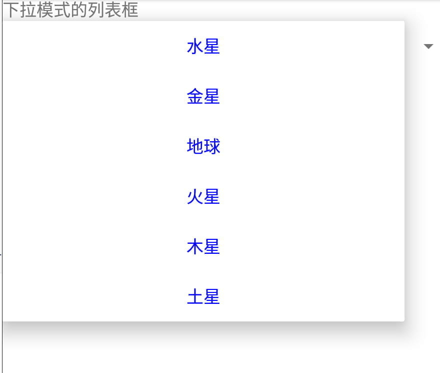
1.2 SimpleAdaper
上面用的适配器是ArrayAdapter，数组适配器简单但是只能用于文本列表，如果想要加上图标之类的，则需要用到简单适配器SimpleAdapter了。
以下是示例代码：
首先是布局文件activity_spinner_icon.xml：
<?xml version="1.0" encoding="utf-8"?>
<LinearLayout xmlns:android="http://schemas.android.com/apk/res/android"
android:layout_width="match_parent"
android:layout_height="match_parent"
android:orientation="vertical">
<TextView
android:layout_width="match_parent"
android:layout_height="wrap_content"
android:text="行星的简单适配器"
android:textSize="17sp" />
<Spinner
android:id="@+id/sp_icon"
android:layout_width="match_parent"
android:layout_height="wrap_content"
android:spinnerMode="dropdown" />
</LinearLayout>
条目布局文件item_simple.xml：
<?xml version="1.0" encoding="utf-8"?>
<LinearLayout xmlns:android="http://schemas.android.com/apk/res/android"
xmlns:tools="http://schemas.android.com/tools"
android:layout_width="match_parent"
android:layout_height="wrap_content"
android:orientation="horizontal">
<ImageView
android:id="@+id/iv_icon"
android:layout_width="0dp"
android:layout_height="50dp"
android:layout_weight="1"
tools:src="@drawable/diqiu" />
<TextView
android:id="@+id/tv_name"
android:layout_width="0dp"
android:layout_height="match_parent"
android:layout_weight="3"
android:gravity="center"
android:textColor="#ff0000"
android:textSize="17sp"
tools:text="地球" />
</LinearLayout>
SpinnerIconActivity：
public class SpinnerIconActivity extends AppCompatActivity implements AdapterView.OnItemSelectedListener {
// 定义下拉列表需要显示的行星图标数组
private static final int[] iconArray = {
R.drawable.shuixing, R.drawable.jinxing, R.drawable.diqiu,
R.drawable.huoxing, R.drawable.muxing, R.drawable.tuxing
};
// 定义下拉列表需要显示的行星名称数组
private static final String[] starArray = {"水星", "金星", "地球", "火星", "木星", "土星"};
@Override
protected void onCreate(Bundle savedInstanceState) {
super.onCreate(savedInstanceState);
setContentView(R.layout.activity_spinner_icon);
// 声明一个映射对象的列表，用于保存行星的图标与名称配对信息
List<Map<String, Object>> list = new ArrayList<>();
// iconArray是行星的图标数组，starArray是行星的名称数组
for (int i = 0; i < iconArray.length; i++) {
Map<String, Object> item = new HashMap<>();
item.put("icon", iconArray[i]);
item.put("name", starArray[i]);
list.add(item);
}
// 声明一个下拉列表的简单适配器，其中指定了图标与文本两组数据
SimpleAdapter startAdapter = new SimpleAdapter(this, list,
R.layout.item_simple,
new String[]{"icon", "name"},
new int[]{R.id.iv_icon, R.id.tv_name});
Spinner sp_icon = findViewById(R.id.sp_icon);
sp_icon.setAdapter(startAdapter);
sp_icon.setSelection(0);
sp_icon.setOnItemSelectedListener(this);
}
@Override
public void onItemSelected(AdapterView<?> parent, View view, int position, long id) {
Toast.makeText(this, "您选择的是" + starArray[position], Toast.LENGTH_SHORT).show();
}
@Override
public void onNothingSelected(AdapterView<?> parent) {
}
}
运行结果：
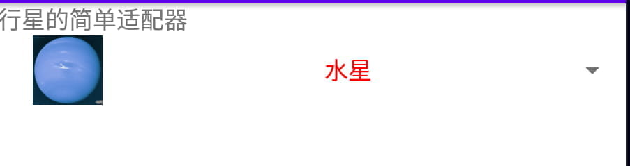 
1.3 BaseAdapter
Android的Adapter继承结构如下：

可以看到上面已经提到的ArrayAdapter和SimpleAdapter都是比较具体的实现类，想要有更多的扩展，必然是需要自定义适配器的，我们可以通过继承BaseAdapter，根据业务自定义数据适配器。
示例代码如下：
item_list.xml：
<LinearLayout xmlns:android="http://schemas.android.com/apk/res/android"
xmlns:tools="http://schemas.android.com/tools"
android:layout_width="match_parent"
android:layout_height="wrap_content"
android:orientation="horizontal">
<!-- 这是显示行星图片的图像视图 -->
<ImageView
android:id="@+id/iv_icon"
android:layout_width="0dp"
android:layout_height="80dp"
android:layout_weight="1"
android:scaleType="fitCenter"
tools:src="@drawable/diqiu" />
<LinearLayout
android:layout_width="0dp"
android:layout_height="match_parent"
android:layout_marginLeft="5dp"
android:layout_weight="3"
android:orientation="vertical">
<!-- 这是显示行星名称的文本视图 -->
<TextView
android:id="@+id/tv_name"
android:layout_width="match_parent"
android:layout_height="0dp"
android:layout_weight="1"
android:gravity="start|center"
android:textColor="@color/black"
android:textSize="20sp"
tools:text="地球" />
<!-- 这是显示行星描述的文本视图 -->
<TextView
android:id="@+id/tv_desc"
android:layout_width="match_parent"
android:layout_height="0dp"
android:layout_weight="2"
android:gravity="start|center"
android:textColor="@color/black"
android:textSize="13sp"
tools:text="地球是太阳系八大行星之一，排行第三，也是太阳系中直径、质量和密度最大的类地行星，距离太阳1.5亿
公里" />
</LinearLayout>
</LinearLayout>
activity_base_adapter.xml：
<?xml version="1.0" encoding="utf-8"?>
<LinearLayout xmlns:android="http://schemas.android.com/apk/res/android"
android:layout_width="match_parent"
android:layout_height="match_parent"
android:orientation="vertical">
<TextView
android:layout_width="match_parent"
android:layout_height="wrap_content"
android:text="行星的基本适配器"
android:textSize="17sp" />
<Spinner
android:id="@+id/sp_planet"
android:layout_width="match_parent"
android:layout_height="wrap_content"
android:spinnerMode="dropdown" />
</LinearLayout>
自定义适配器：
public class PlanetBaseAdapter extends BaseAdapter {
private Context mContext;
private List<Planet> mPlaneList;
public PlanetBaseAdapter(Context mContext, List<Planet> mPlaneList) {
this.mContext = mContext;
this.mPlaneList = mPlaneList;
}
// 获取列表项的个数
@Override
public int getCount() {
return mPlaneList.size();
}
@Override
public Object getItem(int position) {
return mPlaneList.get(position);
}
@Override
public long getItemId(int position) {
return position;
}
@Override
public View getView(int position, View convertView, ViewGroup parent) {
ViewHolder holder;
if (convertView == null){
// 根据布局文件item_list.xml生成转换视图对象
convertView = LayoutInflater.from(mContext).inflate(R.layout.item_list, null);
holder = new ViewHolder();
holder.iv_icon = convertView.findViewById(R.id.iv_icon);
holder.tv_name = convertView.findViewById(R.id.tv_name);
holder.tv_desc = convertView.findViewById(R.id.tv_desc);
// 将视图持有者保存到转换视图当中
convertView.setTag(holder);
}else{
holder = (ViewHolder) convertView.getTag();
}
// 给控制设置好数据
Planet planet = mPlaneList.get(position);
holder.iv_icon.setImageResource(planet.image);
holder.tv_name.setText(planet.name);
holder.tv_desc.setText(planet.desc);
return convertView;
}
public final class ViewHolder {
public ImageView iv_icon;
public TextView tv_name;
public TextView tv_desc;
}
}
封装Planet：
public class Planet {
public int image; // 行星图标
public String name; // 行星名称
public String desc; // 行星描述
public Planet(int image, String name, String desc) {
this.image = image;
this.name = name;
this.desc = desc;
}
private static int[] iconArray = {R.drawable.shuixing, R.drawable.jinxing, R.drawable.diqiu,
R.drawable.huoxing, R.drawable.muxing, R.drawable.tuxing};
private static String[] nameArray = {"水星", "金星", "地球", "火星", "木星", "土星"};
private static String[] descArray = {
"水星是太阳系八大行星最内侧也是最小的一颗行星，也是离太阳最近的行星",
"金星是太阳系八大行星之一，排行第二，距离太阳0.725天文单位",
"地球是太阳系八大行星之一，排行第三，也是太阳系中直径、质量和密度最大的类地行星，距离太阳1.5亿公里",
"火星是太阳系八大行星之一，排行第四，属于类地行星，直径约为地球的53%",
"木星是太阳系八大行星中体积最大、自转最快的行星，排行第五。它的质量为太阳的千分之一，但为太阳系中其它七大行星质量总和的2.5倍",
"土星为太阳系八大行星之一，排行第六，体积仅次于木星"
};
public static List<Planet> getDefaultList() {
List<Planet> planetList = new ArrayList<Planet>();
for (int i = 0; i < iconArray.length; i++) {
planetList.add(new Planet(iconArray[i], nameArray[i], descArray[i]));
}
return planetList;
}
}
BaseAdapterActivity：
public class BaseAdapterActivity extends AppCompatActivity implements AdapterView.OnItemSelectedListener {
private List<Planet> planetList;
@Override
protected void onCreate(Bundle savedInstanceState) {
super.onCreate(savedInstanceState);
setContentView(R.layout.activity_base_adapter);
Spinner sp_planet = findViewById(R.id.sp_planet);
// 获取默认的行星列表，即水星、金星、地球、火星、木星、土星
planetList = Planet.getDefaultList();
// 构建一个行星列表的适配器
PlanetBaseAdapter adapter = new PlanetBaseAdapter(this, planetList);
sp_planet.setAdapter(adapter);
sp_planet.setSelection(0);
sp_planet.setOnItemSelectedListener(this);
}
@Override
public void onItemSelected(AdapterView<?> parent, View view, int position, long id) {
Toast.makeText(this, "您选择的是" + planetList.get(position).name, Toast.LENGTH_SHORT).show();
}
@Override
public void onNothingSelected(AdapterView<?> parent) {
}
}
运行结果：

2.列表类视图
2.1 列表视图 ListView
ListView允许在页面上分行展示相似的数据列表，例如新闻列表、商品列表、图书列表等，方便用户浏览与操作。
上面下拉列表都是点击选中之后就会消失，而如果想要实现像购物商城那样排列显示商品的效果，则可以用ListView。
对于上面的代码，数据适配器PlanetBaseAdapter，条目布局item_list.xml，都不需要修改。只需要修改主Activity即可：
<?xml version="1.0" encoding="utf-8"?>
<LinearLayout xmlns:android="http://schemas.android.com/apk/res/android"
android:layout_width="match_parent"
android:layout_height="match_parent"
android:orientation="vertical">
<LinearLayout
android:layout_width="match_parent"
android:layout_height="40dp">
<CheckBox
android:id="@+id/ck_divider"
android:layout_width="0dp"
android:layout_height="match_parent"
android:layout_weight="1"
android:gravity="start|center"
android:text="显示分隔线"
android:textSize="17sp"/>
<CheckBox
android:id="@+id/ck_selector"
android:layout_width="0dp"
android:layout_height="match_parent"
android:layout_weight="1"
android:gravity="start|center"
android:text="显示按压背景"
android:textSize="17sp"/>
</LinearLayout>
<!--只需要添加ListView即可-->
<ListView
android:id="@+id/lv_planet"
android:layout_width="match_parent"
android:layout_height="wrap_content"
android:divider="@null"
android:dividerHeight="0dp"
android:listSelector="@color/transparent"/>
</LinearLayout>
public class ListViewActivity extends AppCompatActivity implements AdapterView.OnItemClickListener, CompoundButton.OnCheckedChangeListener {
private List<Planet> planetList;
private CheckBox ck_diviver;
private CheckBox ck_selector;
private ListView lv_planet;
@Override
protected void onCreate(Bundle savedInstanceState) {
super.onCreate(savedInstanceState);
setContentView(R.layout.activity_list_view);
lv_planet = findViewById(R.id.lv_planet);
planetList = Planet.getDefaultList();
PlanetBaseAdapter adapter = new PlanetBaseAdapter(this, planetList);
lv_planet.setAdapter(adapter);
lv_planet.setOnItemClickListener(this);
ck_diviver = findViewById(R.id.ck_divider);
ck_diviver.setOnCheckedChangeListener(this);
ck_selector = findViewById(R.id.ck_selector);
ck_selector.setOnCheckedChangeListener(this);
}
@Override
public void onItemClick(AdapterView<?> parent, View view, int position, long id) {
Toast.makeText(this, "您选择的是：" + planetList.get(position).name, Toast.LENGTH_SHORT).show();
}
@Override
public void onCheckedChanged(CompoundButton buttonView, boolean isChecked) {
switch (buttonView.getId()) {
case R.id.ck_divider:
// 显示分隔线
if (ck_diviver.isChecked()) {
// 从资源文件获得图形对象
Drawable drawable = getResources().getDrawable(R.color.black, getTheme());
lv_planet.setDivider(drawable);
// 设置列表视图的分隔线高度
lv_planet.setDividerHeight(Utils.dip2px(this, 1));
} else {
lv_planet.setDivider(null);
lv_planet.setDividerHeight(0);
}
break;
case R.id.ck_selector:
// 显示按压背景
if (ck_selector.isChecked()) {
// 设置列表项的按压状态图形
lv_planet.setSelector(R.drawable.list_selector);
} else {
Drawable drawable = getResources().getDrawable(R.color.transparent, getTheme());
lv_planet.setSelector(drawable);
}
break;
}
}
}
运行效果如下：
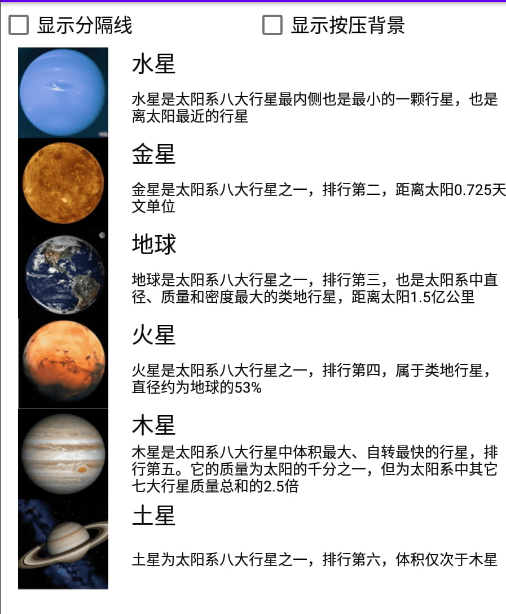
2.2 网格视图 GridView
除了列表视图，网格视图GridView也是常见的列表类视图，它用于分行分列显示表格信息，比列表视图更适合展示物品清单。
在XML文件中添加GridView需要指定列的数目，以及空隙的拉伸模式，示例如下：
<GridView
android:id="@+id/gv_planet"
android:layout_width="match_parent"
android:layout_height="wrap_content"
android:numColumns="2"
android:stretchMode="columnWidth" />
网格布局在页面布局上有很多细节，这里就暂不扩展，可以找些相关介绍文章再详细学习。

3.翻页类视图
3.1 翻页视图 ViewPager
翻页视图的原理类似列表视图和网格视图，它们的用法也很类似。例如，列表视图和网格视图使用基本适配器BaseAdapter，翻页视图则使用翻页适配器PagerAdapter；列表视图和网格视图使用列表项的点击监听器OnItemClickListener，翻页视图则使用页面变更监听器OnPageChangeListener监听页面切换事件。
3.2翻页标签栏 PagerTabStrip
翻页视图的布局文件：
<?xml version="1.0" encoding="utf-8"?>
<LinearLayout xmlns:android="http://schemas.android.com/apk/res/android"
xmlns:app="http://schemas.android.com/apk/res-auto"
xmlns:tools="http://schemas.android.com/tools"
android:layout_width="match_parent"
android:layout_height="match_parent"
android:orientation="vertical">
<!-- 注意翻页视图ViewPager的节点名称要填全路径 -->
<androidx.viewpager.widget.ViewPager
android:id="@+id/vp_content"
android:layout_width="match_parent"
android:layout_height="400dp">
<!-- 注意翻页标签栏PagerTabStrip的节点名称要填全路径 -->
<androidx.viewpager.widget.PagerTabStrip
android:id="@+id/pts_tab"
android:layout_width="wrap_content"
android:layout_height="wrap_content" />
</androidx.viewpager.widget.ViewPager>
</LinearLayout>
编写适配器：
public class ImagePagerAdapater extends PagerAdapter {
private final Context mContext;
private final ArrayList<GoodsInfo> mGoodsList;
// 声明一个图像视图列表
private List<ImageView> mViewList = new ArrayList<>();
public ImagePagerAdapater(Context mContext, ArrayList<GoodsInfo> mGoodsList) {
this.mContext = mContext;
this.mGoodsList = mGoodsList;
// 给每个商品分配一个专用的图像视图
for (GoodsInfo info : mGoodsList) {
ImageView view = new ImageView(mContext);
view.setLayoutParams(new ViewGroup.LayoutParams(
ViewGroup.LayoutParams.MATCH_PARENT,
ViewGroup.LayoutParams.WRAP_CONTENT
));
view.setImageResource(info.pic);
mViewList.add(view);
}
}
@Override
public int getCount() {
return mViewList.size();
}
@Override
public boolean isViewFromObject(@NonNull View view, @NonNull Object object) {
return view == object;
}
// 实例化指定位置的页面，并将其添加到容器中
@NonNull
@Override
public Object instantiateItem(@NonNull ViewGroup container, int position) {
// 添加一个view到container中，而后返回一个跟这个view可以关联起来的对象，
// 这个对象能够是view自身，也能够是其余对象，
// 关键是在isViewFromObject可以将view和这个object关联起来
ImageView item = mViewList.get(position);
container.addView(item);
return item;
}
// 从容器中销毁指定位置的页面
@Override
public void destroyItem(@NonNull ViewGroup container, int position, @NonNull Object object) {
container.removeView(mViewList.get(position));
}
@Nullable
@Override
public CharSequence getPageTitle(int position) {
return mGoodsList.get(position).name;
}
}
Activity：
public class PagerTabActivity extends AppCompatActivity implements ViewPager.OnPageChangeListener {
private ArrayList<GoodsInfo> mGoodsList;
@Override
protected void onCreate(Bundle savedInstanceState) {
super.onCreate(savedInstanceState);
setContentView(R.layout.activity_pager_tab);
initPagerStrip();
initViewPager();
}
// 初始化翻页标签栏
private void initPagerStrip() {
PagerTabStrip pts_tab = findViewById(R.id.pts_tab);
// 设置翻页标签栏的文本大小
pts_tab.setTextSize(TypedValue.COMPLEX_UNIT_SP, 20);
pts_tab.setTextColor(Color.BLACK);
}
// 初始化翻页视图
private void initViewPager() {
ViewPager vp_content = findViewById(R.id.vp_content);
mGoodsList = GoodsInfo.getDefaultList();
ImagePagerAdapater adapter = new ImagePagerAdapater(this, mGoodsList);
vp_content.setAdapter(adapter);
// 给翻页视图添加页面变更监听器
vp_content.addOnPageChangeListener(this);
vp_content.setCurrentItem(3);
}
@Override
public void onPageScrolled(int position, float positionOffset, int positionOffsetPixels) {
}
@Override
public void onPageSelected(int position) {
ToastUtil.show(this, "您翻到的手机品牌是：" + mGoodsList.get(position).name);
}
@Override
public void onPageScrollStateChanged(int state) {
}
}
4.Fragment
Fragment（碎片）是一种可以嵌入在Activity中的UI片段，与Activity非常相似，不仅包含布局，同时也具有自己的生命周期。
Fragment 表示应用界面中可重复使用的一部分。Fragment 允许您将界面划分为离散的区块，从而将模块化和可重用性引入 Activity 的界面。
Fragment的布局文件和代码使用起来和Activity基本无异。除了继承自Fragment与入口方法onCreateView两点，其他地 方类似活动页面代码。
Fragment的注册方式有两种：
- 静态注册：在xml中引入
- 动态注册：通过java代码的方式引入
4.1 静态注册：
创建一个Frament：
public class StaticFragment extends Fragment {
@Nullable
@Override
public View onCreateView(@NonNull LayoutInflater inflater, @Nullable ViewGroup container, @Nullable Bundle savedInstanceState) {
return inflater.inflate(R.layout.fragment_static, container, false);
}
}
Fragment的布局文件：
<LinearLayout xmlns:android="http://schemas.android.com/apk/res/android"
android:layout_width="match_parent"
android:layout_height="wrap_content"
android:orientation="horizontal"
android:background="#bbffbb">
<TextView
android:id="@+id/tv_adv"
android:layout_width="0dp"
android:layout_height="match_parent"
android:layout_weight="1"
android:gravity="center"
android:text="广告图片"
android:textColor="#000000"
android:textSize="17sp" />
<ImageView
android:id="@+id/iv_adv"
android:layout_width="0dp"
android:layout_height="match_parent"
android:layout_weight="4"
android:src="@drawable/adv"
android:scaleType="fitCenter" />
</LinearLayout>
在Activity的布局文件中静态引入Fragment：
<?xml version="1.0" encoding="utf-8"?>
<LinearLayout xmlns:android="http://schemas.android.com/apk/res/android"
xmlns:app="http://schemas.android.com/apk/res-auto"
xmlns:tools="http://schemas.android.com/tools"
android:layout_width="match_parent"
android:layout_height="match_parent"
tools:context=".FragmentStaticActivity"
android:orientation="vertical">
<!-- 引入Fragment-->
<fragment
android:id="@+id/fragment_static"
android:name="com.example.gaojikongjian.fragment.StaticFragment"
android:layout_width="match_parent"
android:layout_height="60dp"/>
<TextView
android:layout_width="match_parent"
android:layout_height="wrap_content"
android:gravity="center"
android:text="这里是每个页面的具体内容"
android:textColor="#000000"
android:textSize="17sp"/>
</LinearLayout>
java代码：
public class FragmentStaticActivity extends AppCompatActivity {
@Override
protected void onCreate(Bundle savedInstanceState) {
super.onCreate(savedInstanceState);
setContentView(R.layout.activity_fragment_static);
}
}
运行结果：
4.2 动态注册：
对上面的翻页标签页进行改进，使用Fragment实现：
创建Fragment：
public class DynamicFragment extends Fragment {
public static DynamicFragment newInstance(int position, int image_id, String desc) {
DynamicFragment fragment = new DynamicFragment();
//把参数打包，传入Fragment中
Bundle args = new Bundle();
args.putInt("position", position);
args.putInt("image_id", image_id);
args.putString("desc", desc);
fragment.setArguments(args);
return fragment;
}
@Override
public View onCreateView(LayoutInflater inflater, ViewGroup container,
Bundle savedInstanceState) {
//根据布局文件生成视图对象
View view = inflater.inflate(R.layout.fragment_dynamic, container, false);
Bundle arguments = getArguments();
if(arguments != null){
ImageView iv_pic = view.findViewById(R.id.iv_pic);
TextView tv_desc = view.findViewById(R.id.tv_desc);
iv_pic.setImageResource(arguments.getInt("image_id", R.drawable.huawei));
tv_desc.setText(arguments.getString("desc"));
}
return view;
}
}
Fragment的布局文件 fragment_dynamic：
<LinearLayout xmlns:android="http://schemas.android.com/apk/res/android"
android:layout_width="match_parent"
android:layout_height="wrap_content"
android:orientation="vertical">
<ImageView
android:id="@+id/iv_pic"
android:layout_width="match_parent"
android:layout_height="360dp"
android:scaleType="fitCenter" />
<TextView
android:id="@+id/tv_desc"
android:layout_width="match_parent"
android:layout_height="wrap_content"
android:gravity="left"
android:textColor="@color/black"
android:textSize="17sp" />
</LinearLayout>
适配器 MobilePagerAdapter：
public class MobilePagerAdapter extends FragmentPagerAdapter {
private List<GoodsInfo> mGoodsList;
public MobilePagerAdapter(@NonNull FragmentManager fm, List<GoodsInfo> goodsList) {
super(fm, BEHAVIOR_RESUME_ONLY_CURRENT_FRAGMENT);
this.mGoodsList = goodsList;
}
@NonNull
@Override
public Fragment getItem(int position) {
GoodsInfo goodsInfo = mGoodsList.get(position);
return DynamicFragment.newInstance(position, goodsInfo.pic, goodsInfo.description);
}
@Override
public int getCount() {
return mGoodsList.size();
}
@Nullable
@Override
public CharSequence getPageTitle(int position) {
return mGoodsList.get(position).name;
}
}
Activity：
public class FragmentDynamicActivity extends AppCompatActivity {
private ArrayList<GoodsInfo> mGoodsList;
@Override
protected void onCreate(Bundle savedInstanceState) {
super.onCreate(savedInstanceState);
setContentView(R.layout.activity_fragment_dynamic);
initPagerStrip();
initViewPager();
}
// 初始化翻页标签栏
private void initPagerStrip() {
PagerTabStrip pts_tab = findViewById(R.id.pts_tab);
// 设置翻页标签栏的文本大小
pts_tab.setTextSize(TypedValue.COMPLEX_UNIT_SP, 20);
pts_tab.setTextColor(Color.BLACK);
}
// 初始化翻页视图
private void initViewPager() {
ViewPager vp_content = findViewById(R.id.vp_content);
mGoodsList = GoodsInfo.getDefaultList();
//适配器
MobilePagerAdapter adapter = new MobilePagerAdapter(getSupportFragmentManager(), mGoodsList);
vp_content.setAdapter(adapter);
vp_content.setCurrentItem(3);
}
}
Activity的布局文件：
<LinearLayout xmlns:android="http://schemas.android.com/apk/res/android"
xmlns:app="http://schemas.android.com/apk/res-auto"
xmlns:tools="http://schemas.android.com/tools"
android:layout_width="match_parent"
android:layout_height="match_parent"
android:orientation="vertical">
<androidx.viewpager.widget.ViewPager
android:id="@+id/vp_content"
android:layout_width="match_parent"
android:layout_height="wrap_content">
<androidx.viewpager.widget.PagerTabStrip
android:id="@+id/pts_tab"
android:layout_width="wrap_content"
android:layout_height="wrap_content" />
</androidx.viewpager.widget.ViewPager>
</LinearLayout>
运行结果：

七、广播组件 Broadcast
广播组件 Broadcast 是Android 四大组件之一。
广播有以下特点：
- 活动只能一对一通信；而广播可以一对多，一人发送广播，多人接收处理。
- 对于发送方来说，广播不需要考虑接收方有没有在工作，接收方在工作就接收广播，不在工作就丢弃广播。
- 对于接收方来说，因为可能会收到各式各样的广播，所以接收方要自行过滤符合条件的广播，之后再解包处理
与广播有关的方法主要有以下3个。
- sendBroadcast：发送广播。
- registerReceiver：注册广播的接收器，可在onStart或onResume方法中注册接收器。
- unregisterReceiver：注销广播的接收器，可在onStop或onPause方法中注销接收器。
1.收发应用广播
1.1 标准广播
定义一个广播接收器：
// 定义一个标准广播的接收器
public class StandardReceiver extends BroadcastReceiver {
public static final String STANDARD_ACTION = "com.example.broadcaststudy.standard";
// 一旦接收到标准广播，马上触发接收器的onReceive方法
@Override
public void onReceive(Context context, Intent intent) {
if(intent != null && intent.getAction().equals(STANDARD_ACTION)){
Log.d("hhh", "收到一个标准广播");
}
}
}
在Activity中动态注册接收器：
public class BroadcastStandardActivity extends AppCompatActivity {
private StandardReceiver standardReceiver;
@Override
protected void onCreate(Bundle savedInstanceState) {
super.onCreate(savedInstanceState);
setContentView(R.layout.activity_broadcast_standard);
findViewById(R.id.btn_send_standard).setOnClickListener(new View.OnClickListener() {
@Override
public void onClick(View v) {
//发送标准广播
Intent intent = new Intent(standardReceiver.STANDARD_ACTION);
sendBroadcast(intent);
}
});
}
@Override
protected void onStart() {
super.onStart();
standardReceiver = new StandardReceiver();
// 创建一个意图过滤器，只处理STANDARD_ACTION的广播
IntentFilter filter = new IntentFilter(StandardReceiver.STANDARD_ACTION);
// 注册接收器，注册之后才能正常接收广播
registerReceiver(standardReceiver, filter);
}
@Override
protected void onStop() {
super.onStop();
// 注销接收器，注销之后就不再接收广播
unregisterReceiver(standardReceiver);
}
}
xml文件：
<LinearLayout xmlns:android="http://schemas.android.com/apk/res/android"
android:layout_width="match_parent"
android:layout_height="match_parent"
android:orientation="vertical"
android:padding="5dp">
<Button
android:id="@+id/btn_send_standard"
android:layout_width="match_parent"
android:layout_height="wrap_content"
android:gravity="center"
android:text="发送标准广播"
android:textColor="@color/black"
android:textSize="17sp" />
</LinearLayout>
1.2 有序广播
由于广播没指定唯一的接收者，因此可能存在多个接收器，每个接收器都拥有自己的处理逻辑。这些接收器默认是都能够接受到指定广播并且是之间的顺序按照注册的先后顺序，也可以通过指定优先级来指定顺序。
先收到广播的接收器A，既可以让其他接收器继续收听广播，也可以中断广播不让其他接收器收听。
public class BroadOrderActivity extends AppCompatActivity implements View.OnClickListener {
public static final String ORDER_ACTION = "com.example.broadcaststudy.order";
private OrderAReceiver orderAReceiver;
private OrderBReceiver orderBReceiver;
@Override
protected void onCreate(Bundle savedInstanceState) {
super.onCreate(savedInstanceState);
setContentView(R.layout.activity_broad_order);
findViewById(R.id.btn_send_order).setOnClickListener(this);
}
@Override
public void onClick(View v) {
// 创建一个指定动作的意图
Intent intent = new Intent(ORDER_ACTION);
// 发送有序广播
sendOrderedBroadcast(intent, null);
}
@Override
protected void onStart() {
super.onStart();
// 多个接收器处理有序广播的顺序规则为：
// 1、优先级越大的接收器，越早收到有序广播；
// 2、优先级相同的时候，越早注册的接收器越早收到有序广播
orderAReceiver = new OrderAReceiver();
IntentFilter filterA = new IntentFilter(ORDER_ACTION);
filterA.setPriority(8);
registerReceiver(orderAReceiver, filterA);
orderBReceiver = new OrderBReceiver();
IntentFilter filterB = new IntentFilter(ORDER_ACTION);
filterB.setPriority(10);
registerReceiver(orderBReceiver, filterB);
}
@Override
protected void onStop() {
super.onStop();
unregisterReceiver(orderAReceiver);
unregisterReceiver(orderBReceiver);
}
}
1.3 静态广播
广播也可以通过静态代码的方式来进行注册。广播接收器也能在AndroidManifest.xml注册，并且注册时候的节点名为receiver，一旦接收器在AndroidManifest.xml注册，就无须在代码中注册了。
之所以罕见静态注册，是因为静态注册容易导致安全问题，故而Android 8.0之后废弃了大多数静态注册。
静态广播的实现方式这里暂不介绍，可自行查阅资料。
2.监听系统广播
除了应用自身的广播，系统也会发出各式各样的广播，通过监听这些系统广播，App能够得知周围环境发生了什么变化，从而按照最新环境调整运行逻辑。
接下来举几个系统广播的例子。
2.1 监听分钟到达广播
步骤一，定义一个分钟广播的接收器，并重写接收器的onReceive方法，补充收到广播之后的处理逻辑。
步骤二，重写活动页面的onStart方法，添加广播接收器的注册代码，注意要让接收器过滤分钟到达广播Intent.ACTION_TIME_TICK。
步骤三，重写活动页面的onStop方法，添加广播接收器的注销代码。
public class SystemMinuteActivity extends AppCompatActivity {
private TextView tv_minute; // 声明一个文本视图对象
private String desc = "开始侦听分钟广播，请稍等。注意要保持屏幕亮着，才能正常收到广播";
@Override
protected void onCreate(Bundle savedInstanceState) {
super.onCreate(savedInstanceState);
setContentView(R.layout.activity_system_minute);
tv_minute = findViewById(R.id.tv_minute);
tv_minute.setText(desc);
}
@Override
protected void onStart() {
super.onStart();
timeReceiver = new TimeReceiver(); // 创建一个分钟变更的广播接收器
// 创建一个意图过滤器，只处理系统分钟变化的广播
IntentFilter filter = new IntentFilter(Intent.ACTION_TIME_TICK);
registerReceiver(timeReceiver, filter); // 注册接收器，注册之后才能正常接收广播
}
@Override
protected void onStop() {
super.onStop();
unregisterReceiver(timeReceiver); // 注销接收器，注销之后就不再接收广播
}
private TimeReceiver timeReceiver; // 声明一个分钟广播的接收器实例
// 定义一个分钟广播的接收器
private class TimeReceiver extends BroadcastReceiver {
// 一旦接收到分钟变更的广播，马上触发接收器的onReceive方法
@Override
public void onReceive(Context context, Intent intent) {
if (intent != null) {
desc = String.format("%s\n%s 收到一个分钟到达广播%s", desc,
DateUtil.getNowTime(), intent.getAction());
tv_minute.setText(desc);
}
}
}
}
2.2 监听网络变更广播
// 定义一个网络变更的广播接收器
private class NetworkReceiver extends BroadcastReceiver {
// 一旦接收到网络变更的广播，马上触发接收器的onReceive方法
@Override
public void onReceive(Context context, Intent intent) {
if (intent != null) {
NetworkInfo networkInfo = intent.getParcelableExtra("networkInfo");
String networkClass =
NetworkUtil.getNetworkClass(networkInfo.getSubtype());
desc = String.format("%s\n%s 收到一个网络变更广播，网络大类为%s，" +
"网络小类为%s，网络制式为%s，网络状态为%s",
desc, DateUtil.getNowTime(),
networkInfo.getTypeName(),
networkInfo.getSubtypeName(), networkClass,
networkInfo.getState().toString());
tv_network.setText(desc);
}
}
}
@Override
protected void onStart() {
super.onStart();
networkReceiver = new NetworkReceiver(); // 创建一个网络变更的广播接收器
// 创建一个意图过滤器，只处理网络状态变化的广播
IntentFilter filter = new
IntentFilter("android.net.conn.CONNECTIVITY_CHANGE");
registerReceiver(networkReceiver, filter); // 注册接收器，注册之后才能正常接收广播
}
@Override
protected void onStop() {
super.onStop();
unregisterReceiver(networkReceiver); // 注销接收器，注销之后就不再接收广播
}
此时切换网络，将会有输出提示。
八、服务组件 Service
1.介绍
可在后台执行长时间运行操作而不提供界面的应用组件。如下载文件、播放音乐
Service有两种方式：
- startService：简单地启动，之后不能进行交互
- bindService：启动并绑定Service之后，可以进行交互
下面通过一个音乐播放器实例来介绍这两种方式
2.startService
首先创建MusicHelper用来播放音频
public class MusicHelper {
private MediaPlayer mediaPlayer;
private Context context;
private final int[] musics = new int[]{R.raw.daoxiang, R.raw.qingtian};
private int musicIndex = 0;
private boolean prepared = false;
public MusicHelper(Context context) {
this.context = context;
//创建MediaPlayer对象
createMediaPlayer();
}
//创建MediaPlayer对象
private void createMediaPlayer() {
this.mediaPlayer = new MediaPlayer();
mediaPlayer.setAudioStreamType(AudioManager.STREAM_MUSIC);
}
//播放
public void play() {
if (mediaPlayer.isPlaying()) {
return;
}
if (prepared) {
mediaPlayer.start();
Log.d("hhh", "播放音频 play");
return;
}
try {
//这里路径要注意：android.resource:// + 包名 + R.raw.XXXX
mediaPlayer.setDataSource(context, Uri.parse("android.resource://" + context.getPackageName() + "/" + musics[musicIndex]));
} catch (IOException e) {
e.printStackTrace();
}
mediaPlayer.prepareAsync();
mediaPlayer.setOnPreparedListener(new MediaPlayer.OnPreparedListener() {
@Override
public void onPrepared(MediaPlayer mp) {
mp.start();
Log.d("hhh", "播放音频 play");
prepared = true;
}
});
}
//暂停
public void pause() {
if (!mediaPlayer.isPlaying()) {
return ;
}
mediaPlayer.pause();
}
//下一首
public void next(){
musicIndex = musicIndex + 1;
musicIndex = musicIndex % musics.length;
destroy();
createMediaPlayer();
play();
}
//销毁
public void destroy(){
if(mediaPlayer == null){
return ;
}
mediaPlayer.stop();
mediaPlayer.release();
mediaPlayer = null;
prepared = false;
}
}
实现Service类：
public class MusicService extends Service {
private MusicHelper musicHelper;
//在onCreate中创建MusicHelper
@Override
public void onCreate() {
super.onCreate();
musicHelper = new MusicHelper(this);
}
//在onDestroy中销毁MusicHelper
@Override
public void onDestroy() {
super.onDestroy();
musicHelper.destroy();
musicHelper = null;
}
//播放音频
@Override
public int onStartCommand(Intent intent, int flags, int startId) {
musicHelper.play();
Log.d("hhh", "播放音频 onStartCommand");
return super.onStartCommand(intent, flags, startId);
}
@Nullable
@Override
public IBinder onBind(Intent intent) {
throw new UnsupportedOperationException("Not yet implemented");
}
}
在AndroidManifest.xml中注册：
<service
android:name=".service.MusicService"
android:enabled="true"
android:exported="true" />
播放，暂停音乐：
public class StartServicActivity extends AppCompatActivity {
@Override
protected void onCreate(Bundle savedInstanceState) {
super.onCreate(savedInstanceState);
setContentView(R.layout.activity_start_servic);
//播放
findViewById(R.id.btPlay).setOnClickListener(new View.OnClickListener() {
@Override
public void onClick(View v) {
Log.d("hhh", "点击了按钮");
Intent intent = new Intent(StartServicActivity.this, MusicService.class);
//这里会自动调用Service的onStartCommand方法
startService(intent);
}
});
//暂停
findViewById(R.id.btStop).setOnClickListener(new View.OnClickListener() {
@Override
public void onClick(View v) {
Intent intent = new Intent(StartServicActivity.this, MusicService.class);
//这里会直接调用Service的onDestroy方法，销毁Service
stopService(intent);
}
});
}
}
startService只能简单启动和销毁Service，没办法进行交互，也就没办法进行暂停，下一首等功能。
3.bindService
在Service类中添加了Binder类：
public class MusicService2 extends Service {
private MusicHelper musicHelper;
//在onCreate中创建MusicHelper
@Override
public void onCreate() {
super.onCreate();
musicHelper = new MusicHelper(this);
}
//在onDestroy中销毁MusicHelper
@Override
public void onDestroy() {
super.onDestroy();
musicHelper.destroy();
musicHelper = null;
}
//播放音频
@Override
public int onStartCommand(Intent intent, int flags, int startId) {
musicHelper.play();
Log.d("hhh", "播放音频 onStartCommand");
return super.onStartCommand(intent, flags, startId);
}
public class MyBinder extends Binder {
private MusicService2 service;
public MyBinder(MusicService2 service) {
this.service = service;
}
public void play() {
service.musicHelper.play();
}
public void next() {
service.musicHelper.next();
}
public void pause() {
service.musicHelper.pause();
}
public void destroy() {
service.musicHelper.destroy();
}
}
@Nullable
@Override
public IBinder onBind(Intent intent) {
Log.d("hhh", "onBind");
return new MyBinder(this);
}
}
连接类MyConn：
- 调用bindService之后，客户端端连上Service
- 触发MyConn类的onServiceConnected方法，获取Binder对象
- 之后可以Binder对象和Service交互（播放、暂停、下一首）
public class MyConn implements ServiceConnection {
public MusicService2.MyBinder myBinder = null;
@Override
public void onServiceConnected(ComponentName name, IBinder service) {
myBinder = (MusicService2.MyBinder) service;
}
@Override
public void onServiceDisconnected(ComponentName name) {
}
}
此时就可以真正实现播放，暂停，下一首等功能了：
public class BindServiceActivity extends AppCompatActivity {
private MyConn myConn;
@Override
protected void onCreate(Bundle savedInstanceState) {
super.onCreate(savedInstanceState);
setContentView(R.layout.activity_bind_service);
//初始化服务
initService();
//播放
findViewById(R.id.btPlay).setOnClickListener(new View.OnClickListener() {
@Override
public void onClick(View v) {
Log.d("hhh", "点击了按钮");
if(myConn.myBinder == null){
return ;
}
myConn.myBinder.play();
}
});
//暂停
findViewById(R.id.btStop).setOnClickListener(new View.OnClickListener() {
@Override
public void onClick(View v) {
if(myConn.myBinder == null){
return ;
}
myConn.myBinder.pause();
}
});
//下一首
findViewById(R.id.btNext).setOnClickListener(new View.OnClickListener() {
@Override
public void onClick(View v) {
if(myConn.myBinder == null){
return ;
}
myConn.myBinder.next();
}
});
}
//初始化服务
public void initService(){
//开启服务
Intent intent = new Intent(this, MusicService2.class);
startService(intent);
//绑定服务
if(myConn == null){
myConn = new MyConn();
intent = new Intent(this, MusicService2.class);
//这里会自动调用MyConn的onServiceConnected方法
bindService(intent, myConn, 0);
}
}
}
九、网络通信
1. Handler消息机制
Handler是一种异步回调机制，主要负责与子线程进行通信。
HTTP请求需要一定时间才能完成，所以不能在主线程中执行。所以一般采用创建一个新线程的方式来执行HTTP，然后再将返回结果发送给主线程。Android提供了Handler来实现这一过程。
Handler机制主要包括四个关键对象：
- Message：消息。
- Handler：处理者，主要负责Message的发送以及处理。
- MessageQueue：消息队列，主要用来存放Handler发送过来的消息。
- Looper：消息循环，不断的从MessageQueue中抽取Message并执行。

以下通过获取高德天气信息为例，介绍Handler的基本使用
创建获取天气的线程WeatherThread：
public class WeatherThread extends Thread {
//天气接口
private String path = "https://restapi.amap.com/v3/weather/weatherInfo?city=440300&key=f15437fa96e40903e41bcb0c0adc8d38";
//handler
private Handler handler;
public WeatherThread(Handler handler) {
this.handler = handler;
}
@Override
public void run() {
String weather = getWeather();
Message message = new Message();
message.what = 0;
message.obj = weather;
handler.sendMessage(message);
}
//获取天气信息
private String getWeather() {
StringBuilder builder = new StringBuilder();
HttpsURLConnection conn = null;
try {
URL url = new URL(path);
conn = (HttpsURLConnection) url.openConnection();
conn.setRequestMethod("GET");
conn.setConnectTimeout(5000);
InputStream is = conn.getInputStream();
BufferedReader reader = new BufferedReader(new InputStreamReader(is));
String result = reader.readLine();
return result;
} catch (Exception e) {
e.printStackTrace();
} finally {
if (conn != null) {
conn.disconnect();
}
}
return null;
}
}
WeatherHandler：
public class WeatherHandler extends Handler {
private HandlerActivity handlerActivity;
public WeatherHandler(HandlerActivity handlerActivity){
this.handlerActivity = handlerActivity;
}
@Override
public void handleMessage(@NonNull Message msg) {
super.handleMessage(msg);
//接受到消息则把天气结果设置到文本框
if(msg.what == 0){
TextView txWeather = handlerActivity.findViewById(R.id.tx_weather);
txWeather.setText((String) msg.obj);
}
}
}
Activity：
public class HandlerActivity extends AppCompatActivity {
@Override
protected void onCreate(Bundle savedInstanceState) {
super.onCreate(savedInstanceState);
setContentView(R.layout.activity_handler);
//点击按钮后开启新线程获取天气信息
findViewById(R.id.bt_weather).setOnClickListener(new View.OnClickListener() {
@Override
public void onClick(View v) {
WeatherHandler handler = new WeatherHandler(HandlerActivity.this);
new WeatherThread(handler).start();
}
});
}
}
<TextView
android:id="@+id/tx_weather"
android:layout_width="match_parent"
android:layout_height="300dp"
android:background="@drawable/border"
android:layout_margin="30dp"/>
<Button
android:id="@+id/bt_weather"
android:layout_width="wrap_content"
android:layout_height="wrap_content"
android:layout_gravity="center"
android:text="获取天气信息"
android:layout_marginTop="40dp"
android:background="#B4B5AB"/>
2.okhttp
上面用的Java中的HttpURLConnection是比较底层的接口，编写代码工作量大，容易出错。
okhttp是android平台使用最广泛的第三方网络框架，okhttp做了很多网络优化，功能也很强大。
okhttp有同步、异步两种接口
- 同步接口：阻塞方式
- 异步接口：自动创建线程进行网络请求
2.1 同步方式
public class WeatherOkHttpThread extends Thread {
//天气接口
private String path = "https://restapi.amap.com/v3/weather/weatherInfo?city=440300&key=****";
//handler
private Handler handler;
public WeatherOkHttpThread(Handler handler) {
this.handler = handler;
}
@Override
public void run() {
String weather = getWeather();
Message message = new Message();
message.what = 0;
message.obj = weather;
handler.sendMessage(message);
}
//获取天气信息
private String getWeather() {
//创建OkHttpClient
OkHttpClient client = new OkHttpClient();
//构建请求
Request request = new Request.Builder().url(path).build();
String result = "";
try {
//同步的方式发送请求
Response response = client.newCall(request).execute();
if(response != null){
result = response.body().string();
}
} catch (IOException e) {
e.printStackTrace();
}
return result;
}
}
2.2 异步方式：
异步方式就不需要人为开启子线程了：
//异步方式
public class WeatherOkHttpActivity extends AppCompatActivity {
//天气接口
private String path = "https://restapi.amap.com/v3/weather/weatherInfo?city=440300&key=****";
//handler
private Handler handler;
@Override
protected void onCreate(Bundle savedInstanceState) {
super.onCreate(savedInstanceState);
setContentView(R.layout.activity_weather_ok_http);
//赋值Handler
handler = new WeatherHandler2(this);
//点击按钮后，okHttp异步请求获取天气信息
findViewById(R.id.bt_weather).setOnClickListener(new View.OnClickListener() {
@Override
public void onClick(View v) {
OkHttpClient client = new OkHttpClient();
Request request = new Request.Builder().url(path).build();
client.newCall(request).enqueue(new Callback() {
//请求失败，打印异常
@Override
public void onFailure(@NonNull Call call, @NonNull IOException e) {
e.printStackTrace();
}
//响应
@Override
public void onResponse(@NonNull Call call, @NonNull Response response) throws IOException {
if (response != null) {
String result = response.body().toString();
//回调函数运行在子线程，不能直接操控UI
//通过handler把天气信息发送到主线程显示
Message message = new Message();
message.what = 0;
message.obj = result;
handler.sendMessage(message);
}
}
});
}
});
}
}
WeatherHandler2：和上面的WeatherHandler基本无异，只是变了Activity，为了区分而已
public class WeatherHandler2 extends Handler {
private WeatherOkHttpActivity activity;
public WeatherHandler2(WeatherOkHttpActivity activity){
this.activity = activity;
}
@Override
public void handleMessage(@NonNull Message msg) {
super.handleMessage(msg);
//接受到消息则把天气结果设置到文本框
if(msg.what == 0){
TextView txWeather = activity.findViewById(R.id.tx_weather);
txWeather.setText((String) msg.obj);
}
}
}
3.retrofit
在Android开发中，Retrofit是当下最热的一个网络请求库。
底层默认使用okhttp封装的，准确来说,网络请求的工作本质上是okhttp完成，而 Retrofit 仅负责网络请求接口的封装。
其作用主要是简化代码、提高可维护性。
另外，最重要的是：okhttp异步请求的回调运行在子线程，而retrofit的异步请求的回调默认运行在主线程。
使用retrofit时，不再需要使用handler机制手工进行线程间通信。
仍然使用天气的例子来介绍基本使用：
//创建一个接口
//指定url（不包含域名和参数），GET请求的参数通过@Query指定
public interface WeatherService {
//这里偷懒没有定义实体类，而是使用JsonObject代替
@GET("v3/weather/weatherInfo")
Call<JsonObject> fetchWeatherResult(@Query("key") String key,
@Query("city") String city);
}
Activity：
public class WeatherRetrofitActivity extends AppCompatActivity {
@Override
protected void onCreate(Bundle savedInstanceState) {
super.onCreate(savedInstanceState);
setContentView(R.layout.activity_weather_retrofit);
//点击按钮后，retrofit请求获取天气信息
findViewById(R.id.bt_weather).setOnClickListener(new View.OnClickListener() {
@Override
public void onClick(View v) {
Retrofit retrofit = new Retrofit.Builder()
.baseUrl("https://restapi.amap.com")
.addConverterFactory(GsonConverterFactory.create())
.build();
WeatherService weatherService = retrofit.create(WeatherService.class);
Call<JsonObject> call = weatherService.fetchWeatherResult("***(此处为key)", "440300");
call.enqueue(new Callback<JsonObject>() {
//响应
@Override
public void onResponse(Call<JsonObject> call, Response<JsonObject> response) {
//获得天气结果
JsonObject result = response.body();
//直接设置到textView,不再需要使用handler手动进行线程间通信
TextView textView = findViewById(R.id.tx_weather);
textView.setText(result.toString());
}
//请求失败
@Override
public void onFailure(Call<JsonObject> call, Throwable t) {
t.printStackTrace();
}
});
}
});
}
}